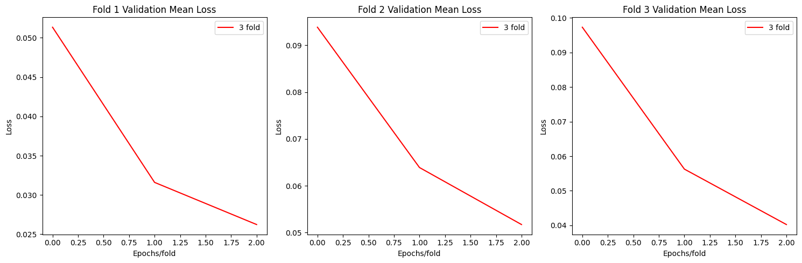
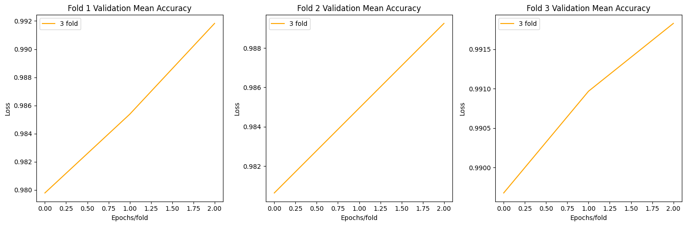

import torch
import torch.nn as nn
from tqdm import tqdm
from sklearn.metrics import confusion_matrix, roc_auc_score
from torchvision.transforms import transforms
from PIL import Image
import os
import numpy as np
from torch.utils.data import DataLoader, SubsetRandomSampler
from sklearn.model_selection import KFold
from sklearn.metrics import confusion_matrix, roc_auc_score
import matplotlib.pyplot as plt
import torchvision.models as models
import torch.nn.functional as FML for Sustainability
Regular Imports
Specifying GPU for acceleration
device = torch.device('cuda' if torch.cuda.is_available() else 'cpu')Data Utilities
- data augmentation and transforms to prevent overfitting with eg random flip.
- image size we resizing is (224,224,3)
- normalising to a mean and standard deviation i specifically choose this mean because this is mean and std from imagenet dataset and a good representative for image datasets. [(https://stackoverflow.com/questions/58151507/why-pytorch-officially-use-mean-0-485-0-456-0-406-and-std-0-229-0-224-0-2)]
class Data(torch.utils.data.Dataset):
def __init__(self,images,labels):
super().__init__()
self.images = images
self.labels = labels
self.preprocess = transforms.Compose([
transforms.RandomHorizontalFlip(),
transforms.Resize(256),
transforms.CenterCrop(224),
transforms.ToTensor(),
transforms.Normalize(mean=[0.485, 0.456, 0.406], std=[0.229, 0.224, 0.225]),
])
assert len(self.images)==len(self.labels),"unmatched dataset"
def __len__(self):
return len(self.images)
def __getitem__(self,idx):
img = Image.open(self.images[idx])
label = self.labels[idx]
return self.preprocess(img), torch.tensor(label,dtype=torch.long)Here is mean data distribution of pixel values of all classes
img_path = "/kaggle/input/animal-image-dataset-90-different-animals/animals/animals"
pixel_values = []
images = []
for folder in os.listdir(img_path):
anim_fold = os.path.join(img_path, folder)
for t, img_file in enumerate(os.listdir(anim_fold)):
if t>=1:break
img_path_full = os.path.join(anim_fold, img_file)
images.append(img_path_full)
labels = [-1]*len(images)
temp_data = Data(images=images,labels=labels)
for img,label in temp_data:
pixel_values.append(img.flatten())
# Plot histogram of pixel values
plt.figure(figsize=(10, 6))
plt.hist(pixel_values, bins=30, alpha=0.7)
plt.xlabel('Pixel Value')
plt.ylabel('Frequency')
plt.title('Histogram of Pixel Values')
plt.show()Train function
- for every epoch it first trains on train_loader and do a validation on val_loader
- here we are using tqdm for a progress bar
- Default hyperparameters
- epochs per fold =: 3
- learning rate =: 1e-4
- loss function =: CrossEntropyLoss
- optimizer =: AdamW with lr = 1e-4 and defaults betas (0.9,0.99) with 0.01 default weight decay
superconvergence post[https://www.fast.ai/posts/2018-07-02-adam-weight-decay.html]
there are some optimizations like: * deleting model at end and saving best weights * deleting images and labels sent to gpu at end * Half precision for validation , since we dont have to update weights here, using half precision makes it fast for fast evaluating.
def train(train_loader, val_loader, model, epochs=3, lr=1e-4, model_name="model",lossf = nn.CrossEntropyLoss(),best_acc=0.0):
model.to(device)
model.train()
if(os.path.exists(f"{model_name}_model.pth")):
model.load_state_dict(torch.load(f"{model_name}_model.pth")) #saving best weights
print(f"weights of {model_name} loaded")
optim = torch.optim.AdamW(model.parameters(), lr=lr)
losslist = []
accuracylist = []
y_true = []
y_pred = []
for epoch in range(epochs):
# Training loop
total_loss = 0.0
total_correct = 0
total_samples = 0
#progress bar
train_progress = tqdm(enumerate(train_loader), total=len(train_loader), desc=f"Epoch {epoch+1}/{epochs} (Training) for {model_name}")
for batch_idx, (imgs, labels) in train_progress:
imgs, labels = imgs.to(device), labels.to(device)
out = model(imgs)
loss = lossf(out, labels)
optim.zero_grad(set_to_none=True)
loss.backward()
optim.step()
total_loss += loss.item()
_, predicted = torch.max(out.data, 1)
total_correct += (predicted == labels).sum().item()
total_samples += labels.size(0)
loss_now = total_loss / (batch_idx + 1)
accuracy_now = total_correct / total_samples
train_progress.set_postfix(loss=loss_now, acc=accuracy_now)
del imgs, labels
# Validation loop
total_val_loss = 0.0
total_val_correct = 0
total_val_samples = 0
val_progress = tqdm(enumerate(val_loader), total=len(val_loader), desc=f"Epoch {epoch+1}/{epochs} (Validation) for {model_name}")
model.eval()
#model.eval() to turn dropout off and stop tracking gradients
with torch.no_grad():
for batch_idx, (imgs, labels) in val_progress:
imgs, labels = imgs.to(device), labels.to(device)
with torch.autocast(device_type="cuda"):##Half preicision
out = model(imgs)
loss = lossf(out, labels)
total_val_loss += loss.item()
_, predicted = torch.max(out.data, 1)
total_val_correct += (predicted == labels).sum().item()
total_val_samples += labels.size(0)
val_loss_now = total_val_loss / (batch_idx + 1)
val_accuracy_now = total_val_correct / total_val_samples
val_progress.set_postfix(loss=val_loss_now, acc=val_accuracy_now)
y_true.extend(labels.cpu().numpy())
y_pred.extend(predicted.cpu().numpy())
del imgs, labels
losslist.append(total_val_loss / len(val_loader))
val_acc = total_val_correct / total_val_samples
accuracylist.append(val_acc)
#saving best model
if val_acc > best_acc:
best_acc = val_acc
save(model, f"{model_name}_model.pth")
print(f"{model_name} weights saved with best accuracy :{best_acc}")
model.train()
del model
print("Training completed weight saved.")
return losslist, accuracylist, y_true, y_pred, best_acc
def save(model, path):
torch.save(model.state_dict(), path)
print(f"Model saved to {path}")Main One vs Rest binary classification function
- Here we will select some class and then perform binary classification on it means, we assign 1 label to selected class and 0 label to other classes and then take loss by CrossEntropy and perform weights update.
- for every data class we will make a train and Validation Dataloader for 3 folds and collect data like loss and accuracy to plot
Dataloader
- taking images from a particular data index class and other data classes, and for binary classification we set data index class labels as 1 and other labels as 0
- here take is a parameter which defines how much to take from other classes currently we take 10% of other classes and it works.
- setting number of workers 2 and pin memory for faster data caching
- SubsetRandomSampler for selecting indices
Batch Size * batch size is 32 * since GPU we are using P100 has enough memory and bottleneck is not gpu but cpu for data caching.
def one_vs_rest(model,model_name, data_index, n_fold=3,batch_size=32, num_workers=2,img_path = "/kaggle/input/animal-image-dataset-90-different-animals/animals/animals",best_acc=0.0):
# Data loading
images = []
labels = []
for folder in os.listdir(img_path):
anim_fold = os.path.join(img_path, folder)
if folder == os.listdir(img_path)[data_index]:
take = 1
else:
take = 0.25
tot_len = len(os.listdir(anim_fold))
for t,img_file in enumerate(os.listdir(anim_fold)):
if t>=take*tot_len:
break
img_path_full = os.path.join(anim_fold, img_file)
images.append(img_path_full)
if folder == os.listdir(img_path)[data_index]:
labels.append(1)
else:
labels.append(0)
images = np.array(images)
labels = np.array(labels)
# Define dataset and indices
dataset = Data(images=images, labels=labels)
kf = KFold(n_splits=n_fold, shuffle=True, random_state=42)##3 fold
allloss = {"fold1":[],"fold2":[],"fold3":[]}
allacc = {"fold1":[],"fold2":[],"fold3":[]}
ally_true = {"fold1":[],"fold2":[],"fold3":[]}
ally_pred = {"fold1":[],"fold2":[],"fold3":[]}
for fold, (train_indices, val_indices) in enumerate(kf.split(dataset)):
train_sampler = torch.utils.data.SubsetRandomSampler(train_indices)
train_loader = DataLoader(dataset, batch_size=batch_size, sampler=train_sampler, num_workers=num_workers, pin_memory=True)
val_sampler = torch.utils.data.SubsetRandomSampler(val_indices)
val_loader = DataLoader(dataset, batch_size=batch_size, sampler=val_sampler, num_workers=num_workers, pin_memory=True)
print(f"Fold {fold+1}:")
losslist, acclist, y_true, y_pred, best_acc = train(train_loader, val_loader, model, model_name=model_name, best_acc=best_acc)
allloss[f"fold{fold+1}"].append(losslist)
allacc[f"fold{fold+1}"].append(acclist)
ally_true[f"fold{fold+1}"].append(y_true)
ally_pred[f"fold{fold+1}"].append(y_pred)
return allloss,allacc,ally_true,ally_pred, best_accCustomModel
- We used model with AttentionBlock to emphasize the importance of image patches.to focus on important part of images and discared irrelevant parts.although it is helpful in medical datasets but in animal datasets maybe there is a big landscape with animal in small pixels for eg with birds, there attention will be useful.
Components
Convolution Blocks
- There are 5 Conv Blocks each constituting:
- conv2d batchnorm relu conv2d batchnorm relu and maxpool at the end
- these convblocks are commonly used.
- batchnorm is used to stabilise training from covariate shift [https://arxiv.org/abs/1502.03167]
- ReLU is used as an activation function as used by imagenet paper.
Hyperparameters
- kernel size : 3 for Conv filters and :=2 for MaxPooling
Attention Block
- The intermediate features is the output of pool-3 or pool-4 and the global feature vector (output of pool-5) is fed as input to the attention layer.
- feature upsampling is done via bilinear interpolation to mak intermediate and global feature vector same shape.
- After that an element wise sum is done followed by a convolution operation that just reduces the 256 channels to 1.
- This is then fed into a Softmax layer, which gives us a normalized Attention map (A). Each scalar element in A represents the degree of attention to the corresponding spatial feature vector in F.
- The new feature vector is then computed by pixel-wise multiplication. That is, each feature vector f is multiplied by the attention element a
- So, the attention map A and the new feature vector are the outputs of the Attention Layer.
[https://github.com/SaoYan/IPMI2019-AttnMel/blob/99e4a9b71717fb51f24d7994948b6a0e76bb8d58/networks.py]
Initialising
we initialise with kaiming normal to prevent gradient vanishing or exploding latter on.
Conv2d Layers: initializes the weights using the Kaiming normal.
BatchNorm2d Layers: it sets the weights to 1 and biases to 0.
Linear Layers: initializes the weights from a normal distribution with mean 0 and standard deviation 0.01. It sets the biases to 0.
class AttentionBlock(nn.Module):
def __init__(self, in_features_l, in_features_g, attn_features, up_factor, normalize_attn=True):
super(AttentionBlock, self).__init__()
self.up_factor = up_factor
self.normalize_attn = normalize_attn
self.W_l = nn.Conv2d(in_channels=in_features_l, out_channels=attn_features, kernel_size=1, padding=0, bias=False)
self.W_g = nn.Conv2d(in_channels=in_features_g, out_channels=attn_features, kernel_size=1, padding=0, bias=False)
self.phi = nn.Conv2d(in_channels=attn_features, out_channels=1, kernel_size=1, padding=0, bias=True)
def forward(self, l, g):
N, C, W, H = l.size()
l_ = self.W_l(l)
g_ = self.W_g(g)
if self.up_factor > 1:
g_ = F.interpolate(g_, scale_factor=self.up_factor, mode='bilinear', align_corners=False)
c = self.phi(F.relu(l_ + g_)) # batch_sizex1xWxH
# compute attn map
if self.normalize_attn:
a = F.softmax(c.view(N,1,-1), dim=2).view(N,1,W,H)
else:
a = torch.sigmoid(c)
# re-weight the local feature
f = torch.mul(a.expand_as(l), l) # batch_sizexCxWxH
if self.normalize_attn:
output = f.view(N,C,-1).sum(dim=2) # weighted sum
else:
output = F.adaptive_avg_pool2d(f, (1,1)).view(N,C) # global average pooling
return a, output
class Model(nn.Module):
def __init__(self, num_classes, normalize_attn=False):
super().__init__()
self.conv_block1 = nn.Sequential(
nn.Conv2d(3, 64, kernel_size=3, padding=1),
nn.BatchNorm2d(64),
nn.ReLU(inplace=True),
nn.Conv2d(64, 64, kernel_size=3, padding=1),
nn.BatchNorm2d(64),
nn.ReLU(inplace=True),
nn.MaxPool2d(kernel_size=2, stride=2)
)
self.conv_block2 = nn.Sequential(
nn.Conv2d(64, 128, kernel_size=3, padding=1),
nn.BatchNorm2d(128),
nn.ReLU(inplace=True),
nn.Conv2d(128, 128, kernel_size=3, padding=1),
nn.BatchNorm2d(128),
nn.ReLU(inplace=True),
nn.MaxPool2d(kernel_size=2, stride=2)
)
self.conv_block3 = nn.Sequential(
nn.Conv2d(128, 256, kernel_size=3, padding=1),
nn.BatchNorm2d(256),
nn.ReLU(inplace=True),
nn.Conv2d(256, 256, kernel_size=3, padding=1),
nn.BatchNorm2d(256),
nn.ReLU(inplace=True),
nn.Conv2d(256, 256, kernel_size=3, padding=1),
nn.BatchNorm2d(256),
nn.ReLU(inplace=True),
nn.MaxPool2d(kernel_size=2, stride=2)
)
self.conv_block4 = nn.Sequential(
nn.Conv2d(256, 512, kernel_size=3, padding=1),
nn.BatchNorm2d(512),
nn.ReLU(inplace=True),
nn.Conv2d(512, 512, kernel_size=3, padding=1),
nn.BatchNorm2d(512),
nn.ReLU(inplace=True),
nn.Conv2d(512, 512, kernel_size=3, padding=1),
nn.BatchNorm2d(512),
nn.ReLU(inplace=True),
nn.MaxPool2d(kernel_size=2, stride=2)
)
self.conv_block5 = nn.Sequential(
nn.Conv2d(512, 512, kernel_size=3, padding=1),
nn.BatchNorm2d(512),
nn.ReLU(inplace=True),
nn.Conv2d(512, 512, kernel_size=3, padding=1),
nn.BatchNorm2d(512),
nn.ReLU(inplace=True),
nn.Conv2d(512, 512, kernel_size=3, padding=1),
nn.BatchNorm2d(512),
nn.ReLU(inplace=True),
nn.MaxPool2d(kernel_size=2, stride=2)
)
self.pool = nn.AvgPool2d(7, stride=1)
self.cls = nn.Linear(in_features=768, out_features=num_classes, bias=True)
# initialize the attention blocks defined above
self.attn1 = AttentionBlock(256, 512, 256, 4, normalize_attn=normalize_attn)
self.reset_parameters(self.cls)
self.reset_parameters(self.attn1)
def reset_parameters(self, module):
for m in module.modules():
if isinstance(m, nn.Conv2d):
nn.init.kaiming_normal_(m.weight, mode='fan_in', nonlinearity='relu')
if m.bias is not None:
nn.init.constant_(m.bias, 0.)
elif isinstance(m, nn.BatchNorm2d):
nn.init.constant_(m.weight, 1.)
nn.init.constant_(m.bias, 0.)
elif isinstance(m, nn.Linear):
nn.init.normal_(m.weight, 0., 0.01)
nn.init.constant_(m.bias, 0.)
def forward(self, x):
block1 = self.conv_block1(x) # /2
block2 = self.conv_block2(block1) # /4
block3 = self.conv_block3(block2) # /8
block4 = self.conv_block4(block3) # /16
block5 = self.conv_block5(block4) # /32
N, __, __, __ = block5.size()
g = self.pool(block5).view(N,512)
a1, g1 = self.attn1(block3, block5)
g_hat = torch.cat((g,g1), dim=1) # batch_size x C
out = self.cls(g_hat)
return outmodel = Model(2)
x = torch.randn((8,3,224,224))
model(x)tensor([[ 0.1368, -0.0015],
[ 0.1678, -0.0365],
[ 0.1938, 0.0303],
[ 0.1695, -0.0208],
[ 0.1785, 0.0083],
[ 0.1693, -0.0036],
[ 0.1895, -0.0057],
[ 0.1759, 0.0108]], grad_fn=<AddmmBackward0>)Now we just for every data class perform One vs Rest classification for :
- Resnet
- EfficientNet
- CustomModel
Resnet
##
resnet = torch.hub.load('pytorch/vision:v0.10.0', 'resnet18', pretrained=True)
resnet.fc = nn.Linear(512,2)
allloss = {"fold1":[],"fold2":[],"fold3":[]}
allacc = {"fold1":[],"fold2":[],"fold3":[]}
ally_true = {"fold1":[],"fold2":[],"fold3":[]}
ally_pred = {"fold1":[],"fold2":[],"fold3":[]}
metrics = [allloss,allacc,ally_true,ally_pred]
import time
timer = []
best_acc_resnet = 0.0
n_classes = 5
for data_idx in range(n_classes):
s = time.time()
loss,acc,y_true,y_pred,best_acc_resnet = one_vs_rest(resnet,"Resnet_bi",data_idx,best_acc=best_acc_resnet)
print(f"-------------------data_class:{data_idx+1} completed---------------")
print(f"time elapsed:{time.time()-s:.2f} seconds")
timer.append(time.time()-s)
returned = [loss,acc,y_true,y_pred]
for i,m in enumerate(metrics):
for fold in range(3):
m[f"fold{fold+1}"].append(returned[i][f"fold{fold+1}"])Using cache found in /root/.cache/torch/hub/pytorch_vision_v0.10.0
/opt/conda/lib/python3.10/site-packages/torchvision/models/_utils.py:208: UserWarning: The parameter 'pretrained' is deprecated since 0.13 and may be removed in the future, please use 'weights' instead.
warnings.warn(
/opt/conda/lib/python3.10/site-packages/torchvision/models/_utils.py:223: UserWarning: Arguments other than a weight enum or `None` for 'weights' are deprecated since 0.13 and may be removed in the future. The current behavior is equivalent to passing `weights=ResNet18_Weights.IMAGENET1K_V1`. You can also use `weights=ResNet18_Weights.DEFAULT` to get the most up-to-date weights.
warnings.warn(msg)
Epoch 1/3 (Training) for Resnet_bi: 100%|| 30/30 [00:07<00:00, 4.11it/s, acc=1, loss=0.00333]
Epoch 1/3 (Validation) for Resnet_bi: 100%|| 15/15 [00:03<00:00, 4.47it/s, acc=1, loss=0.00301]
Epoch 2/3 (Training) for Resnet_bi: 100%|| 30/30 [00:06<00:00, 4.55it/s, acc=0.994, loss=0.0185]
Epoch 2/3 (Validation) for Resnet_bi: 100%|| 15/15 [00:03<00:00, 4.82it/s, acc=0.998, loss=0.01]
Epoch 3/3 (Training) for Resnet_bi: 100%|| 30/30 [00:06<00:00, 4.53it/s, acc=0.998, loss=0.00718]
Epoch 3/3 (Validation) for Resnet_bi: 100%|| 15/15 [00:03<00:00, 4.92it/s, acc=0.998, loss=0.00615]
Epoch 1/3 (Training) for Resnet_bi: 100%|| 30/30 [00:06<00:00, 4.45it/s, acc=0.999, loss=0.0059]
Epoch 1/3 (Validation) for Resnet_bi: 100%|| 15/15 [00:03<00:00, 4.25it/s, acc=0.998, loss=0.00262]
Epoch 2/3 (Training) for Resnet_bi: 100%|| 30/30 [00:06<00:00, 4.55it/s, acc=0.999, loss=0.00855]
Epoch 2/3 (Validation) for Resnet_bi: 100%|| 15/15 [00:03<00:00, 4.47it/s, acc=0.996, loss=0.00415]
Epoch 3/3 (Training) for Resnet_bi: 100%|| 30/30 [00:06<00:00, 4.54it/s, acc=0.996, loss=0.0968]
Epoch 3/3 (Validation) for Resnet_bi: 100%|| 15/15 [00:03<00:00, 4.37it/s, acc=0.998, loss=0.003]
Epoch 1/3 (Training) for Resnet_bi: 100%|| 30/30 [00:06<00:00, 4.38it/s, acc=0.997, loss=0.0115]
Epoch 1/3 (Validation) for Resnet_bi: 100%|| 15/15 [00:03<00:00, 4.32it/s, acc=0.998, loss=0.0159]
Epoch 2/3 (Training) for Resnet_bi: 100%|| 30/30 [00:06<00:00, 4.31it/s, acc=0.997, loss=0.064]
Epoch 2/3 (Validation) for Resnet_bi: 100%|| 15/15 [00:03<00:00, 4.58it/s, acc=1, loss=0.00172]
Epoch 3/3 (Training) for Resnet_bi: 100%|| 30/30 [00:06<00:00, 4.64it/s, acc=1, loss=0.00705]
Epoch 3/3 (Validation) for Resnet_bi: 100%|| 15/15 [00:03<00:00, 4.66it/s, acc=1, loss=0.00121]
Epoch 1/3 (Training) for Resnet_bi: 100%|| 30/30 [00:07<00:00, 4.25it/s, acc=0.958, loss=0.192]
Epoch 1/3 (Validation) for Resnet_bi: 100%|| 15/15 [00:03<00:00, 4.79it/s, acc=0.981, loss=0.0378]
Epoch 2/3 (Training) for Resnet_bi: 100%|| 30/30 [00:07<00:00, 4.10it/s, acc=0.996, loss=0.0213]
Epoch 2/3 (Validation) for Resnet_bi: 100%|| 15/15 [00:03<00:00, 4.51it/s, acc=0.994, loss=0.0177]
Epoch 3/3 (Training) for Resnet_bi: 100%|| 30/30 [00:06<00:00, 4.39it/s, acc=0.998, loss=0.0121]
Epoch 3/3 (Validation) for Resnet_bi: 100%|| 15/15 [00:03<00:00, 4.41it/s, acc=0.994, loss=0.0176]
Epoch 1/3 (Training) for Resnet_bi: 100%|| 30/30 [00:07<00:00, 4.22it/s, acc=0.969, loss=0.119]
Epoch 1/3 (Validation) for Resnet_bi: 100%|| 15/15 [00:03<00:00, 4.42it/s, acc=0.972, loss=0.0688]
Epoch 2/3 (Training) for Resnet_bi: 100%|| 30/30 [00:07<00:00, 4.27it/s, acc=0.994, loss=0.0231]
Epoch 2/3 (Validation) for Resnet_bi: 100%|| 15/15 [00:03<00:00, 4.06it/s, acc=0.978, loss=0.042]
Epoch 3/3 (Training) for Resnet_bi: 100%|| 30/30 [00:06<00:00, 4.36it/s, acc=0.999, loss=0.00505]
Epoch 3/3 (Validation) for Resnet_bi: 100%|| 15/15 [00:03<00:00, 4.56it/s, acc=0.985, loss=0.0463]
Epoch 1/3 (Training) for Resnet_bi: 100%|| 30/30 [00:06<00:00, 4.31it/s, acc=0.967, loss=0.121]
Epoch 1/3 (Validation) for Resnet_bi: 100%|| 15/15 [00:03<00:00, 4.37it/s, acc=0.978, loss=0.0936]
Epoch 2/3 (Training) for Resnet_bi: 100%|| 30/30 [00:06<00:00, 4.44it/s, acc=0.999, loss=0.0126]
Epoch 2/3 (Validation) for Resnet_bi: 100%|| 15/15 [00:03<00:00, 4.17it/s, acc=0.983, loss=0.0588]
Epoch 3/3 (Training) for Resnet_bi: 100%|| 30/30 [00:06<00:00, 4.49it/s, acc=0.998, loss=0.0209]
Epoch 3/3 (Validation) for Resnet_bi: 100%|| 15/15 [00:03<00:00, 4.51it/s, acc=0.983, loss=0.0682]
Epoch 1/3 (Training) for Resnet_bi: 100%|| 30/30 [00:07<00:00, 4.11it/s, acc=0.966, loss=0.169]
Epoch 1/3 (Validation) for Resnet_bi: 100%|| 15/15 [00:03<00:00, 4.84it/s, acc=0.97, loss=0.0921]
Epoch 2/3 (Training) for Resnet_bi: 100%|| 30/30 [00:06<00:00, 4.30it/s, acc=0.994, loss=0.0244]
Epoch 2/3 (Validation) for Resnet_bi: 100%|| 15/15 [00:03<00:00, 4.50it/s, acc=0.983, loss=0.031]
Epoch 3/3 (Training) for Resnet_bi: 100%|| 30/30 [00:07<00:00, 4.23it/s, acc=0.997, loss=0.00885]
Epoch 3/3 (Validation) for Resnet_bi: 100%|| 15/15 [00:03<00:00, 4.73it/s, acc=0.989, loss=0.0269]
Epoch 1/3 (Training) for Resnet_bi: 100%|| 30/30 [00:06<00:00, 4.36it/s, acc=0.968, loss=0.128]
Epoch 1/3 (Validation) for Resnet_bi: 100%|| 15/15 [00:03<00:00, 4.35it/s, acc=0.976, loss=0.0623]
Epoch 2/3 (Training) for Resnet_bi: 100%|| 30/30 [00:06<00:00, 4.44it/s, acc=0.999, loss=0.0127]
Epoch 2/3 (Validation) for Resnet_bi: 100%|| 15/15 [00:03<00:00, 4.14it/s, acc=0.976, loss=0.0467]
Epoch 3/3 (Training) for Resnet_bi: 100%|| 30/30 [00:06<00:00, 4.60it/s, acc=1, loss=0.00493]
Epoch 3/3 (Validation) for Resnet_bi: 100%|| 15/15 [00:03<00:00, 4.30it/s, acc=0.978, loss=0.0405]
Epoch 1/3 (Training) for Resnet_bi: 100%|| 30/30 [00:06<00:00, 4.46it/s, acc=0.96, loss=0.147]
Epoch 1/3 (Validation) for Resnet_bi: 100%|| 15/15 [00:03<00:00, 4.22it/s, acc=0.989, loss=0.0302]
Epoch 2/3 (Training) for Resnet_bi: 100%|| 30/30 [00:07<00:00, 4.11it/s, acc=0.994, loss=0.0212]
Epoch 2/3 (Validation) for Resnet_bi: 100%|| 15/15 [00:03<00:00, 4.50it/s, acc=0.983, loss=0.0424]
Epoch 3/3 (Training) for Resnet_bi: 100%|| 30/30 [00:06<00:00, 4.55it/s, acc=0.997, loss=0.00762]
Epoch 3/3 (Validation) for Resnet_bi: 100%|| 15/15 [00:03<00:00, 4.52it/s, acc=0.996, loss=0.0139]
Epoch 1/3 (Training) for Resnet_bi: 100%|| 30/30 [00:07<00:00, 4.13it/s, acc=0.965, loss=0.171]
Epoch 1/3 (Validation) for Resnet_bi: 100%|| 15/15 [00:03<00:00, 4.28it/s, acc=0.959, loss=0.146]
Epoch 2/3 (Training) for Resnet_bi: 100%|| 30/30 [00:07<00:00, 4.22it/s, acc=0.989, loss=0.0291]
Epoch 2/3 (Validation) for Resnet_bi: 100%|| 15/15 [00:03<00:00, 4.42it/s, acc=0.987, loss=0.0367]
Epoch 3/3 (Training) for Resnet_bi: 100%|| 30/30 [00:07<00:00, 4.24it/s, acc=0.997, loss=0.0468]
Epoch 3/3 (Validation) for Resnet_bi: 100%|| 15/15 [00:03<00:00, 4.51it/s, acc=0.985, loss=0.0601]
Epoch 1/3 (Training) for Resnet_bi: 100%|| 30/30 [00:07<00:00, 4.15it/s, acc=0.966, loss=0.225]
Epoch 1/3 (Validation) for Resnet_bi: 100%|| 15/15 [00:03<00:00, 4.30it/s, acc=0.968, loss=0.0986]
Epoch 2/3 (Training) for Resnet_bi: 100%|| 30/30 [00:06<00:00, 4.45it/s, acc=0.995, loss=0.0219]
Epoch 2/3 (Validation) for Resnet_bi: 100%|| 15/15 [00:03<00:00, 4.22it/s, acc=0.974, loss=0.0726]
Epoch 3/3 (Training) for Resnet_bi: 100%|| 30/30 [00:06<00:00, 4.35it/s, acc=0.999, loss=0.00951]
Epoch 3/3 (Validation) for Resnet_bi: 100%|| 15/15 [00:03<00:00, 4.45it/s, acc=0.978, loss=0.0565]
Epoch 1/3 (Training) for Resnet_bi: 100%|| 30/30 [00:06<00:00, 4.42it/s, acc=0.959, loss=0.157]
Epoch 1/3 (Validation) for Resnet_bi: 100%|| 15/15 [00:03<00:00, 4.23it/s, acc=0.978, loss=0.0482]
Epoch 2/3 (Training) for Resnet_bi: 100%|| 30/30 [00:06<00:00, 4.29it/s, acc=0.995, loss=0.0215]
Epoch 2/3 (Validation) for Resnet_bi: 100%|| 15/15 [00:03<00:00, 3.84it/s, acc=0.987, loss=0.0342]
Epoch 3/3 (Training) for Resnet_bi: 100%|| 30/30 [00:06<00:00, 4.41it/s, acc=0.999, loss=0.00732]
Epoch 3/3 (Validation) for Resnet_bi: 100%|| 15/15 [00:03<00:00, 4.52it/s, acc=0.983, loss=0.0532]
Epoch 1/3 (Training) for Resnet_bi: 100%|| 30/30 [00:06<00:00, 4.30it/s, acc=0.963, loss=0.157]
Epoch 1/3 (Validation) for Resnet_bi: 100%|| 15/15 [00:03<00:00, 4.48it/s, acc=0.991, loss=0.0217]
Epoch 2/3 (Training) for Resnet_bi: 100%|| 30/30 [00:06<00:00, 4.34it/s, acc=0.999, loss=0.0105]
Epoch 2/3 (Validation) for Resnet_bi: 100%|| 15/15 [00:03<00:00, 4.72it/s, acc=0.998, loss=0.00892]
Epoch 3/3 (Training) for Resnet_bi: 100%|| 30/30 [00:06<00:00, 4.36it/s, acc=0.999, loss=0.00607]
Epoch 3/3 (Validation) for Resnet_bi: 100%|| 15/15 [00:03<00:00, 4.68it/s, acc=0.996, loss=0.0141]
Epoch 1/3 (Training) for Resnet_bi: 100%|| 30/30 [00:07<00:00, 4.15it/s, acc=0.975, loss=0.109]
Epoch 1/3 (Validation) for Resnet_bi: 100%|| 15/15 [00:03<00:00, 4.47it/s, acc=0.985, loss=0.09]
Epoch 2/3 (Training) for Resnet_bi: 100%|| 30/30 [00:07<00:00, 4.16it/s, acc=0.996, loss=0.0156]
Epoch 2/3 (Validation) for Resnet_bi: 100%|| 15/15 [00:03<00:00, 4.34it/s, acc=0.987, loss=0.0379]
Epoch 3/3 (Training) for Resnet_bi: 100%|| 30/30 [00:06<00:00, 4.67it/s, acc=0.999, loss=0.00446]
Epoch 3/3 (Validation) for Resnet_bi: 100%|| 15/15 [00:03<00:00, 4.40it/s, acc=0.985, loss=0.0378]
Epoch 1/3 (Training) for Resnet_bi: 100%|| 30/30 [00:06<00:00, 4.38it/s, acc=0.971, loss=0.114]
Epoch 1/3 (Validation) for Resnet_bi: 100%|| 15/15 [00:03<00:00, 4.09it/s, acc=0.998, loss=0.0158]
Epoch 2/3 (Training) for Resnet_bi: 100%|| 30/30 [00:06<00:00, 4.33it/s, acc=0.999, loss=0.00982]
Epoch 2/3 (Validation) for Resnet_bi: 100%|| 15/15 [00:03<00:00, 4.10it/s, acc=0.998, loss=0.0113]
Epoch 3/3 (Training) for Resnet_bi: 100%|| 30/30 [00:06<00:00, 4.37it/s, acc=1, loss=0.0041]
Epoch 3/3 (Validation) for Resnet_bi: 100%|| 15/15 [00:03<00:00, 4.53it/s, acc=0.996, loss=0.00746]Fold 1:
weights of Resnet_bi loaded
Model saved to Resnet_bi_model.pth
Resnet_bi weights saved with best accuracy :1.0
Training completed weight saved.
Fold 2:
weights of Resnet_bi loaded
Training completed weight saved.
Fold 3:
weights of Resnet_bi loaded
Training completed weight saved.
-------------------data_class:1 completed---------------
time elapsed:92.78 seconds
Fold 1:
weights of Resnet_bi loaded
Training completed weight saved.
Fold 2:
weights of Resnet_bi loaded
Training completed weight saved.
Fold 3:
weights of Resnet_bi loaded
Training completed weight saved.
-------------------data_class:2 completed---------------
time elapsed:95.27 seconds
Fold 1:
weights of Resnet_bi loaded
Training completed weight saved.
Fold 2:
weights of Resnet_bi loaded
Training completed weight saved.
Fold 3:
weights of Resnet_bi loaded
Training completed weight saved.
-------------------data_class:3 completed---------------
time elapsed:94.57 seconds
Fold 1:
weights of Resnet_bi loaded
Training completed weight saved.
Fold 2:
weights of Resnet_bi loaded
Training completed weight saved.
Fold 3:
weights of Resnet_bi loaded
Training completed weight saved.
-------------------data_class:4 completed---------------
time elapsed:96.31 seconds
Fold 1:
weights of Resnet_bi loaded
Training completed weight saved.
Fold 2:
weights of Resnet_bi loaded
Training completed weight saved.
Fold 3:
weights of Resnet_bi loaded
Training completed weight saved.
-------------------data_class:5 completed---------------
time elapsed:94.90 secondsSince 90 classes are lot, we will plot foldwise mean of loss accuracy and confusion matrix for all classes
Resnet Plots
import numpy as np
import matplotlib.pyplot as plt
from sklearn.metrics import confusion_matrix, ConfusionMatrixDisplay, roc_curve, roc_auc_score
def plot_loss(allloss):
fig, axs = plt.subplots(1, 3, figsize=(15, 5))
for i in range(3):
axs[i].plot(np.mean(allloss[f"fold{i+1}"],axis=0)[0], label=f"{fold+1} fold",c='red')
axs[i].set_title(f'Fold {i+1} Validation Mean Loss')
axs[i].set_xlabel('Epochs/fold')
axs[i].set_ylabel('Loss')
axs[i].legend()
plt.tight_layout()
plt.show()
def plot_acc(allacc):
fig, axs = plt.subplots(1, 3, figsize=(15, 5))
for i in range(3):
axs[i].plot(np.mean(allacc[f"fold{i+1}"],axis=0)[0], label=f"{fold+1} fold",c='orange')
axs[i].set_title(f'Fold {i+1} Validation Mean Accuracy')
axs[i].set_xlabel('Epochs/fold')
axs[i].set_ylabel('Loss')
axs[i].legend()
plt.tight_layout()
plt.show()
def plot_cm(all_y_true, all_y_pred):
fig, axs = plt.subplots(1, 3, figsize=(15, 5))
for fold in range(3):
real = []
for i in range(len(ally_true[f"fold{fold+1}"])):
real.extend(ally_true[f"fold{fold+1}"][i][0])
pred = []
for i in range(len(ally_pred[f"fold{fold+1}"])):
pred.extend(ally_pred[f"fold{fold+1}"][i][0])
cm = confusion_matrix(real, pred)
ConfusionMatrixDisplay(cm).plot(ax=axs[fold],cmap='Blues',values_format='d')
axs[fold].set_title(f"Fold {fold+1}")
plt.tight_layout()
plt.show()
plot_loss(allloss)
plot_acc(allacc)
plot_cm(ally_true,ally_pred)EfficientNet b0
##
efficientnet = models.efficientnet_b0(pretrained=True)
efficientnet.classifier[1] = nn.Linear(1280,2)
allloss = {"fold1":[],"fold2":[],"fold3":[]}
allacc = {"fold1":[],"fold2":[],"fold3":[]}
ally_true = {"fold1":[],"fold2":[],"fold3":[]}
ally_pred = {"fold1":[],"fold2":[],"fold3":[]}
metrics = [allloss,allacc,ally_true,ally_pred]
import time
timee = []
best_acc_eff = 0.0
for data_idx in range(n_classes):
s = time.time()
loss,acc,y_true,y_pred,best_acc_eff = one_vs_rest(efficientnet,"EfficientNet_bi",data_idx,best_acc=best_acc_eff)
print(f"-------------------data_class:{data_idx+1} completed---------------")
print(f"time elapsed:{time.time()-s:.2f} seconds")
timee.append(time.time()-s)
returned = [loss,acc,y_true,y_pred]
for i,m in enumerate(metrics):
for fold in range(3):
m[f"fold{fold+1}"].append(returned[i][f"fold{fold+1}"])/opt/conda/lib/python3.10/site-packages/torchvision/models/_utils.py:208: UserWarning: The parameter 'pretrained' is deprecated since 0.13 and may be removed in the future, please use 'weights' instead.
warnings.warn(
/opt/conda/lib/python3.10/site-packages/torchvision/models/_utils.py:223: UserWarning: Arguments other than a weight enum or `None` for 'weights' are deprecated since 0.13 and may be removed in the future. The current behavior is equivalent to passing `weights=EfficientNet_B0_Weights.IMAGENET1K_V1`. You can also use `weights=EfficientNet_B0_Weights.DEFAULT` to get the most up-to-date weights.
warnings.warn(msg)
Epoch 1/3 (Training) for EfficientNet_bi: 100%|| 30/30 [00:07<00:00, 3.77it/s, acc=0.997, loss=0.0832]
Epoch 1/3 (Validation) for EfficientNet_bi: 100%|| 15/15 [00:03<00:00, 4.42it/s, acc=1, loss=0.00237]
Epoch 2/3 (Training) for EfficientNet_bi: 100%|| 30/30 [00:07<00:00, 4.10it/s, acc=1, loss=0.00467]
Epoch 2/3 (Validation) for EfficientNet_bi: 100%|| 15/15 [00:03<00:00, 4.71it/s, acc=1, loss=0.0047]
Epoch 3/3 (Training) for EfficientNet_bi: 100%|| 30/30 [00:07<00:00, 3.91it/s, acc=1, loss=0.00315]
Epoch 3/3 (Validation) for EfficientNet_bi: 100%|| 15/15 [00:03<00:00, 4.63it/s, acc=1, loss=0.00438]
Epoch 1/3 (Training) for EfficientNet_bi: 100%|| 30/30 [00:07<00:00, 4.13it/s, acc=1, loss=0.00203]
Epoch 1/3 (Validation) for EfficientNet_bi: 100%|| 15/15 [00:03<00:00, 4.05it/s, acc=1, loss=0.00432]
Epoch 2/3 (Training) for EfficientNet_bi: 100%|| 30/30 [00:07<00:00, 4.08it/s, acc=1, loss=0.000977]
Epoch 2/3 (Validation) for EfficientNet_bi: 100%|| 15/15 [00:03<00:00, 4.29it/s, acc=1, loss=0.00251]
Epoch 3/3 (Training) for EfficientNet_bi: 100%|| 30/30 [00:07<00:00, 4.20it/s, acc=1, loss=0.000376]
Epoch 3/3 (Validation) for EfficientNet_bi: 100%|| 15/15 [00:04<00:00, 3.71it/s, acc=1, loss=0.0013]
Epoch 1/3 (Training) for EfficientNet_bi: 100%|| 30/30 [00:06<00:00, 4.32it/s, acc=0.999, loss=0.00685]
Epoch 1/3 (Validation) for EfficientNet_bi: 100%|| 15/15 [00:03<00:00, 4.29it/s, acc=1, loss=0.00194]
Epoch 2/3 (Training) for EfficientNet_bi: 100%|| 30/30 [00:07<00:00, 4.12it/s, acc=1, loss=0.00153]
Epoch 2/3 (Validation) for EfficientNet_bi: 100%|| 15/15 [00:03<00:00, 4.53it/s, acc=1, loss=0.00184]
Epoch 3/3 (Training) for EfficientNet_bi: 100%|| 30/30 [00:07<00:00, 4.21it/s, acc=1, loss=0.00127]
Epoch 3/3 (Validation) for EfficientNet_bi: 100%|| 15/15 [00:04<00:00, 3.71it/s, acc=1, loss=0.00127]
Epoch 1/3 (Training) for EfficientNet_bi: 100%|| 30/30 [00:07<00:00, 4.01it/s, acc=0.946, loss=0.227]
Epoch 1/3 (Validation) for EfficientNet_bi: 100%|| 15/15 [00:03<00:00, 4.43it/s, acc=0.991, loss=0.0465]
Epoch 2/3 (Training) for EfficientNet_bi: 100%|| 30/30 [00:07<00:00, 4.10it/s, acc=0.987, loss=0.0405]
Epoch 2/3 (Validation) for EfficientNet_bi: 100%|| 15/15 [00:03<00:00, 4.41it/s, acc=0.994, loss=0.0244]
Epoch 3/3 (Training) for EfficientNet_bi: 100%|| 30/30 [00:07<00:00, 3.83it/s, acc=0.997, loss=0.0192]
Epoch 3/3 (Validation) for EfficientNet_bi: 100%|| 15/15 [00:03<00:00, 4.75it/s, acc=0.994, loss=0.0253]
Epoch 1/3 (Training) for EfficientNet_bi: 100%|| 30/30 [00:07<00:00, 4.25it/s, acc=0.963, loss=0.169]
Epoch 1/3 (Validation) for EfficientNet_bi: 100%|| 15/15 [00:03<00:00, 4.00it/s, acc=0.966, loss=0.133]
Epoch 2/3 (Training) for EfficientNet_bi: 100%|| 30/30 [00:06<00:00, 4.34it/s, acc=0.988, loss=0.0406]
Epoch 2/3 (Validation) for EfficientNet_bi: 100%|| 15/15 [00:03<00:00, 4.04it/s, acc=0.972, loss=0.0876]
Epoch 3/3 (Training) for EfficientNet_bi: 100%|| 30/30 [00:07<00:00, 4.08it/s, acc=0.996, loss=0.0184]
Epoch 3/3 (Validation) for EfficientNet_bi: 100%|| 15/15 [00:03<00:00, 4.17it/s, acc=0.978, loss=0.0637]
Epoch 1/3 (Training) for EfficientNet_bi: 100%|| 30/30 [00:06<00:00, 4.32it/s, acc=0.951, loss=0.208]
Epoch 1/3 (Validation) for EfficientNet_bi: 100%|| 15/15 [00:03<00:00, 4.30it/s, acc=0.974, loss=0.101]
Epoch 2/3 (Training) for EfficientNet_bi: 100%|| 30/30 [00:07<00:00, 4.19it/s, acc=0.989, loss=0.0406]
Epoch 2/3 (Validation) for EfficientNet_bi: 100%|| 15/15 [00:03<00:00, 4.43it/s, acc=0.978, loss=0.0749]
Epoch 3/3 (Training) for EfficientNet_bi: 100%|| 30/30 [00:07<00:00, 3.81it/s, acc=0.994, loss=0.0222]
Epoch 3/3 (Validation) for EfficientNet_bi: 100%|| 15/15 [00:03<00:00, 4.21it/s, acc=0.981, loss=0.0593]
Epoch 1/3 (Training) for EfficientNet_bi: 100%|| 30/30 [00:07<00:00, 4.13it/s, acc=0.951, loss=0.179]
Epoch 1/3 (Validation) for EfficientNet_bi: 100%|| 15/15 [00:03<00:00, 4.35it/s, acc=0.981, loss=0.0728]
Epoch 2/3 (Training) for EfficientNet_bi: 100%|| 30/30 [00:07<00:00, 3.94it/s, acc=0.988, loss=0.147]
Epoch 2/3 (Validation) for EfficientNet_bi: 100%|| 15/15 [00:03<00:00, 4.14it/s, acc=0.987, loss=0.0532]
Epoch 3/3 (Training) for EfficientNet_bi: 100%|| 30/30 [00:07<00:00, 4.09it/s, acc=0.996, loss=0.0182]
Epoch 3/3 (Validation) for EfficientNet_bi: 100%|| 15/15 [00:03<00:00, 4.27it/s, acc=0.987, loss=0.0468]
Epoch 1/3 (Training) for EfficientNet_bi: 100%|| 30/30 [00:07<00:00, 4.12it/s, acc=0.962, loss=0.148]
Epoch 1/3 (Validation) for EfficientNet_bi: 100%|| 15/15 [00:03<00:00, 3.97it/s, acc=0.966, loss=0.123]
Epoch 2/3 (Training) for EfficientNet_bi: 100%|| 30/30 [00:07<00:00, 4.05it/s, acc=0.984, loss=0.0437]
Epoch 2/3 (Validation) for EfficientNet_bi: 100%|| 15/15 [00:03<00:00, 4.00it/s, acc=0.974, loss=0.0792]
Epoch 3/3 (Training) for EfficientNet_bi: 100%|| 30/30 [00:06<00:00, 4.33it/s, acc=0.996, loss=0.0196]
Epoch 3/3 (Validation) for EfficientNet_bi: 100%|| 15/15 [00:03<00:00, 4.14it/s, acc=0.97, loss=0.069]
Epoch 1/3 (Training) for EfficientNet_bi: 100%|| 30/30 [00:07<00:00, 4.11it/s, acc=0.953, loss=0.235]
Epoch 1/3 (Validation) for EfficientNet_bi: 100%|| 15/15 [00:03<00:00, 4.19it/s, acc=0.966, loss=0.121]
Epoch 2/3 (Training) for EfficientNet_bi: 100%|| 30/30 [00:07<00:00, 3.99it/s, acc=0.984, loss=0.0658]
Epoch 2/3 (Validation) for EfficientNet_bi: 100%|| 15/15 [00:03<00:00, 4.48it/s, acc=0.976, loss=0.0951]
Epoch 3/3 (Training) for EfficientNet_bi: 100%|| 30/30 [00:07<00:00, 4.23it/s, acc=0.991, loss=0.0288]
Epoch 3/3 (Validation) for EfficientNet_bi: 100%|| 15/15 [00:03<00:00, 4.20it/s, acc=0.981, loss=0.0597]
Epoch 1/3 (Training) for EfficientNet_bi: 100%|| 30/30 [00:07<00:00, 4.19it/s, acc=0.954, loss=0.17]
Epoch 1/3 (Validation) for EfficientNet_bi: 100%|| 15/15 [00:03<00:00, 4.11it/s, acc=0.978, loss=0.0813]
Epoch 2/3 (Training) for EfficientNet_bi: 100%|| 30/30 [00:07<00:00, 3.98it/s, acc=0.977, loss=0.152]
Epoch 2/3 (Validation) for EfficientNet_bi: 100%|| 15/15 [00:03<00:00, 4.38it/s, acc=0.985, loss=0.0493]
Epoch 3/3 (Training) for EfficientNet_bi: 100%|| 30/30 [00:07<00:00, 4.08it/s, acc=0.997, loss=0.0218]
Epoch 3/3 (Validation) for EfficientNet_bi: 100%|| 15/15 [00:03<00:00, 4.68it/s, acc=0.985, loss=0.0354]
Epoch 1/3 (Training) for EfficientNet_bi: 100%|| 30/30 [00:07<00:00, 4.21it/s, acc=0.96, loss=0.287]
Epoch 1/3 (Validation) for EfficientNet_bi: 100%|| 15/15 [00:03<00:00, 4.25it/s, acc=0.963, loss=0.118]
Epoch 2/3 (Training) for EfficientNet_bi: 100%|| 30/30 [00:07<00:00, 4.09it/s, acc=0.983, loss=0.0428]
Epoch 2/3 (Validation) for EfficientNet_bi: 100%|| 15/15 [00:03<00:00, 4.19it/s, acc=0.968, loss=0.0869]
Epoch 3/3 (Training) for EfficientNet_bi: 100%|| 30/30 [00:07<00:00, 4.23it/s, acc=0.99, loss=0.0278]
Epoch 3/3 (Validation) for EfficientNet_bi: 100%|| 15/15 [00:03<00:00, 4.03it/s, acc=0.981, loss=0.0688]
Epoch 1/3 (Training) for EfficientNet_bi: 100%|| 30/30 [00:07<00:00, 4.09it/s, acc=0.958, loss=0.187]
Epoch 1/3 (Validation) for EfficientNet_bi: 100%|| 15/15 [00:03<00:00, 4.56it/s, acc=0.957, loss=0.152]
Epoch 2/3 (Training) for EfficientNet_bi: 100%|| 30/30 [00:07<00:00, 3.98it/s, acc=0.989, loss=0.0452]
Epoch 2/3 (Validation) for EfficientNet_bi: 100%|| 15/15 [00:03<00:00, 4.25it/s, acc=0.976, loss=0.0743]
Epoch 3/3 (Training) for EfficientNet_bi: 100%|| 30/30 [00:07<00:00, 4.21it/s, acc=0.99, loss=0.0237]
Epoch 3/3 (Validation) for EfficientNet_bi: 100%|| 15/15 [00:03<00:00, 4.25it/s, acc=0.978, loss=0.0533]
Epoch 1/3 (Training) for EfficientNet_bi: 100%|| 30/30 [00:07<00:00, 3.87it/s, acc=0.951, loss=0.18]
Epoch 1/3 (Validation) for EfficientNet_bi: 100%|| 15/15 [00:03<00:00, 4.31it/s, acc=0.981, loss=0.0538]
Epoch 2/3 (Training) for EfficientNet_bi: 100%|| 30/30 [00:07<00:00, 4.20it/s, acc=0.996, loss=0.0259]
Epoch 2/3 (Validation) for EfficientNet_bi: 100%|| 15/15 [00:03<00:00, 4.56it/s, acc=0.991, loss=0.0264]
Epoch 3/3 (Training) for EfficientNet_bi: 100%|| 30/30 [00:07<00:00, 4.08it/s, acc=0.997, loss=0.0145]
Epoch 3/3 (Validation) for EfficientNet_bi: 100%|| 15/15 [00:03<00:00, 4.67it/s, acc=0.996, loss=0.0194]
Epoch 1/3 (Training) for EfficientNet_bi: 100%|| 30/30 [00:07<00:00, 4.16it/s, acc=0.972, loss=0.121]
Epoch 1/3 (Validation) for EfficientNet_bi: 100%|| 15/15 [00:03<00:00, 3.92it/s, acc=0.972, loss=0.0906]
Epoch 2/3 (Training) for EfficientNet_bi: 100%|| 30/30 [00:06<00:00, 4.34it/s, acc=0.99, loss=0.0343]
Epoch 2/3 (Validation) for EfficientNet_bi: 100%|| 15/15 [00:03<00:00, 4.28it/s, acc=0.972, loss=0.0633]
Epoch 3/3 (Training) for EfficientNet_bi: 100%|| 30/30 [00:07<00:00, 4.17it/s, acc=0.999, loss=0.00922]
Epoch 3/3 (Validation) for EfficientNet_bi: 100%|| 15/15 [00:03<00:00, 4.15it/s, acc=0.974, loss=0.0559]
Epoch 1/3 (Training) for EfficientNet_bi: 100%|| 30/30 [00:07<00:00, 4.15it/s, acc=0.959, loss=0.144]
Epoch 1/3 (Validation) for EfficientNet_bi: 100%|| 15/15 [00:03<00:00, 3.84it/s, acc=0.948, loss=0.11]
Epoch 2/3 (Training) for EfficientNet_bi: 100%|| 30/30 [00:07<00:00, 4.17it/s, acc=0.989, loss=0.0398]
Epoch 2/3 (Validation) for EfficientNet_bi: 100%|| 15/15 [00:03<00:00, 4.51it/s, acc=0.987, loss=0.0353]
Epoch 3/3 (Training) for EfficientNet_bi: 100%|| 30/30 [00:07<00:00, 4.04it/s, acc=0.998, loss=0.0135]
Epoch 3/3 (Validation) for EfficientNet_bi: 100%|| 15/15 [00:03<00:00, 4.53it/s, acc=0.991, loss=0.0277]Fold 1:
weights of EfficientNet_bi loaded
Model saved to EfficientNet_bi_model.pth
EfficientNet_bi weights saved with best accuracy :1.0
Training completed weight saved.
Fold 2:
weights of EfficientNet_bi loaded
Training completed weight saved.
Fold 3:
weights of EfficientNet_bi loaded
Training completed weight saved.
-------------------data_class:1 completed---------------
time elapsed:100.31 seconds
Fold 1:
weights of EfficientNet_bi loaded
Training completed weight saved.
Fold 2:
weights of EfficientNet_bi loaded
Training completed weight saved.
Fold 3:
weights of EfficientNet_bi loaded
Training completed weight saved.
-------------------data_class:2 completed---------------
time elapsed:99.64 seconds
Fold 1:
weights of EfficientNet_bi loaded
Training completed weight saved.
Fold 2:
weights of EfficientNet_bi loaded
Training completed weight saved.
Fold 3:
weights of EfficientNet_bi loaded
Training completed weight saved.
-------------------data_class:3 completed---------------
time elapsed:100.25 seconds
Fold 1:
weights of EfficientNet_bi loaded
Training completed weight saved.
Fold 2:
weights of EfficientNet_bi loaded
Training completed weight saved.
Fold 3:
weights of EfficientNet_bi loaded
Training completed weight saved.
-------------------data_class:4 completed---------------
time elapsed:99.29 seconds
Fold 1:
weights of EfficientNet_bi loaded
Training completed weight saved.
Fold 2:
weights of EfficientNet_bi loaded
Training completed weight saved.
Fold 3:
weights of EfficientNet_bi loaded
Training completed weight saved.
-------------------data_class:5 completed---------------
time elapsed:99.12 secondsEfficientNet Plots
import numpy as np
import matplotlib.pyplot as plt
from sklearn.metrics import confusion_matrix, ConfusionMatrixDisplay, roc_curve, roc_auc_score
def plot_loss(allloss):
fig, axs = plt.subplots(1, 3, figsize=(15, 5))
for i in range(3):
axs[i].plot(np.mean(allloss[f"fold{i+1}"],axis=0)[0], label=f"{fold+1} fold",c='red')
axs[i].set_title(f'Fold {i+1} Validation Mean Loss')
axs[i].set_xlabel('Epochs/fold')
axs[i].set_ylabel('Loss')
axs[i].legend()
plt.tight_layout()
plt.show()
def plot_acc(allacc):
fig, axs = plt.subplots(1, 3, figsize=(15, 5))
for i in range(3):
axs[i].plot(np.mean(allacc[f"fold{i+1}"],axis=0)[0], label=f"{fold+1} fold",c='orange')
axs[i].set_title(f'Fold {i+1} Validation Mean Accuracy')
axs[i].set_xlabel('Epochs/fold')
axs[i].set_ylabel('Loss')
axs[i].legend()
plt.tight_layout()
plt.show()
def plot_cm(all_y_true, all_y_pred):
fig, axs = plt.subplots(1, 3, figsize=(15, 5))
for fold in range(3):
real = []
for i in range(len(ally_true[f"fold{fold+1}"])):
real.extend(ally_true[f"fold{fold+1}"][i][0])
pred = []
for i in range(len(ally_pred[f"fold{fold+1}"])):
pred.extend(ally_pred[f"fold{fold+1}"][i][0])
cm = confusion_matrix(real, pred)
ConfusionMatrixDisplay(cm).plot(ax=axs[fold],cmap='Blues',values_format='d')
axs[fold].set_title(f"Fold {fold+1}")
plt.tight_layout()
plt.show()
plot_loss(allloss)
plot_acc(allacc)
plot_cm(ally_true,ally_pred)
CustomModel
::: {#cell-36 .cell _kg_hide-input=false execution={iopub.execute_input:2024-02-23T03:46:46.633452Z,iopub.status.busy:2024-02-23T03:46:46.633157Z,iopub.status.idle:2024-02-23T03:56:15.240233Z,shell.execute_reply:2024-02-23T03:56:15.239138Z,shell.execute_reply.started:2024-02-23T03:46:46.633427Z} scrolled=true trusted=true execution_count=13}
##
allloss = {"fold1":[],"fold2":[],"fold3":[]}
allacc = {"fold1":[],"fold2":[],"fold3":[]}
ally_true = {"fold1":[],"fold2":[],"fold3":[]}
ally_pred = {"fold1":[],"fold2":[],"fold3":[]}
metrics = [allloss,allacc,ally_true,ally_pred]
import time
timec = []
best_acc_cust = 0.0
for data_idx in range(n_classes):
s = time.time()
loss,acc,y_true,y_pred,best_acc_cust = one_vs_rest(model,"CustomAttModel_bi",data_idx,best_acc=best_acc_cust)
print(f"-------------------data_class:{data_idx+1} completed---------------")
print(f"time elapsed:{time.time()-s:.2f} seconds")
timec.append(time.time()-s)
returned = [loss,acc,y_true,y_pred]
for i,m in enumerate(metrics):
for fold in range(3):
m[f"fold{fold+1}"].append(returned[i][f"fold{fold+1}"])Fold 1:
Model saved to CustomAttModel_bi_model.pth
CustomAttModel_bi weights saved with best accuracy :0.967741935483871
Training completed weight saved.
Fold 2:
weights of CustomAttModel_bi loaded
Training completed weight saved.
Fold 3:
weights of CustomAttModel_bi loaded
Training completed weight saved.
-------------------data_class:1 completed---------------
time elapsed:112.75 seconds
Fold 1:
weights of CustomAttModel_bi loaded
Training completed weight saved.
Fold 2:
weights of CustomAttModel_bi loaded
Training completed weight saved.
Fold 3:
weights of CustomAttModel_bi loaded
Training completed weight saved.
-------------------data_class:2 completed---------------
time elapsed:112.96 seconds
Fold 1:
weights of CustomAttModel_bi loaded
Training completed weight saved.
Fold 2:
weights of CustomAttModel_bi loaded
Training completed weight saved.
Fold 3:
weights of CustomAttModel_bi loaded
Model saved to CustomAttModel_bi_model.pth
CustomAttModel_bi weights saved with best accuracy :0.9720430107526882
Training completed weight saved.
-------------------data_class:3 completed---------------
time elapsed:113.43 seconds
Fold 1:
weights of CustomAttModel_bi loaded
Training completed weight saved.
Fold 2:
weights of CustomAttModel_bi loaded
Training completed weight saved.
Fold 3:
weights of CustomAttModel_bi loaded
Training completed weight saved.
-------------------data_class:4 completed---------------
time elapsed:116.66 seconds
Fold 1:
weights of CustomAttModel_bi loaded
Training completed weight saved.
Fold 2:
weights of CustomAttModel_bi loaded
Training completed weight saved.
Fold 3:
weights of CustomAttModel_bi loaded
Training completed weight saved.
-------------------data_class:5 completed---------------
time elapsed:112.79 secondsEpoch 1/3 (Training) for CustomAttModel_bi: 100%|| 30/30 [00:08<00:00, 3.36it/s, acc=0.945, loss=0.224]
Epoch 1/3 (Validation) for CustomAttModel_bi: 100%|| 15/15 [00:03<00:00, 4.23it/s, acc=0.968, loss=0.148]
Epoch 2/3 (Training) for CustomAttModel_bi: 100%|| 30/30 [00:08<00:00, 3.42it/s, acc=0.949, loss=0.171]
Epoch 2/3 (Validation) for CustomAttModel_bi: 100%|| 15/15 [00:03<00:00, 4.38it/s, acc=0.88, loss=0.394]
Epoch 3/3 (Training) for CustomAttModel_bi: 100%|| 30/30 [00:08<00:00, 3.47it/s, acc=0.951, loss=0.173]
Epoch 3/3 (Validation) for CustomAttModel_bi: 100%|| 15/15 [00:03<00:00, 4.11it/s, acc=0.927, loss=0.249]
Epoch 1/3 (Training) for CustomAttModel_bi: 100%|| 30/30 [00:08<00:00, 3.52it/s, acc=0.961, loss=0.219]
Epoch 1/3 (Validation) for CustomAttModel_bi: 100%|| 15/15 [00:03<00:00, 4.08it/s, acc=0.942, loss=0.221]
Epoch 2/3 (Training) for CustomAttModel_bi: 100%|| 30/30 [00:08<00:00, 3.49it/s, acc=0.96, loss=0.168]
Epoch 2/3 (Validation) for CustomAttModel_bi: 100%|| 15/15 [00:03<00:00, 4.25it/s, acc=0.953, loss=0.187]
Epoch 3/3 (Training) for CustomAttModel_bi: 100%|| 30/30 [00:08<00:00, 3.40it/s, acc=0.961, loss=0.131]
Epoch 3/3 (Validation) for CustomAttModel_bi: 100%|| 15/15 [00:03<00:00, 3.97it/s, acc=0.951, loss=0.197]
Epoch 1/3 (Training) for CustomAttModel_bi: 100%|| 30/30 [00:08<00:00, 3.54it/s, acc=0.958, loss=0.175]
Epoch 1/3 (Validation) for CustomAttModel_bi: 100%|| 15/15 [00:03<00:00, 4.22it/s, acc=0.953, loss=0.212]
Epoch 2/3 (Training) for CustomAttModel_bi: 100%|| 30/30 [00:08<00:00, 3.55it/s, acc=0.959, loss=0.158]
Epoch 2/3 (Validation) for CustomAttModel_bi: 100%|| 15/15 [00:03<00:00, 4.00it/s, acc=0.953, loss=0.189]
Epoch 3/3 (Training) for CustomAttModel_bi: 100%|| 30/30 [00:08<00:00, 3.50it/s, acc=0.959, loss=0.147]
Epoch 3/3 (Validation) for CustomAttModel_bi: 100%|| 15/15 [00:03<00:00, 3.95it/s, acc=0.951, loss=0.196]
Epoch 1/3 (Training) for CustomAttModel_bi: 100%|| 30/30 [00:08<00:00, 3.43it/s, acc=0.948, loss=0.218]
Epoch 1/3 (Validation) for CustomAttModel_bi: 100%|| 15/15 [00:03<00:00, 4.35it/s, acc=0.948, loss=0.166]
Epoch 2/3 (Training) for CustomAttModel_bi: 100%|| 30/30 [00:08<00:00, 3.48it/s, acc=0.948, loss=0.147]
Epoch 2/3 (Validation) for CustomAttModel_bi: 100%|| 15/15 [00:03<00:00, 4.39it/s, acc=0.908, loss=0.324]
Epoch 3/3 (Training) for CustomAttModel_bi: 100%|| 30/30 [00:08<00:00, 3.47it/s, acc=0.951, loss=0.127]
Epoch 3/3 (Validation) for CustomAttModel_bi: 100%|| 15/15 [00:03<00:00, 3.85it/s, acc=0.966, loss=0.12]
Epoch 1/3 (Training) for CustomAttModel_bi: 100%|| 30/30 [00:08<00:00, 3.62it/s, acc=0.962, loss=0.156]
Epoch 1/3 (Validation) for CustomAttModel_bi: 100%|| 15/15 [00:03<00:00, 3.76it/s, acc=0.933, loss=0.173]
Epoch 2/3 (Training) for CustomAttModel_bi: 100%|| 30/30 [00:08<00:00, 3.51it/s, acc=0.959, loss=0.136]
Epoch 2/3 (Validation) for CustomAttModel_bi: 100%|| 15/15 [00:04<00:00, 3.67it/s, acc=0.933, loss=0.178]
Epoch 3/3 (Training) for CustomAttModel_bi: 100%|| 30/30 [00:08<00:00, 3.53it/s, acc=0.961, loss=0.123]
Epoch 3/3 (Validation) for CustomAttModel_bi: 100%|| 15/15 [00:03<00:00, 3.93it/s, acc=0.935, loss=0.216]
Epoch 1/3 (Training) for CustomAttModel_bi: 100%|| 30/30 [00:08<00:00, 3.51it/s, acc=0.951, loss=0.159]
Epoch 1/3 (Validation) for CustomAttModel_bi: 100%|| 15/15 [00:03<00:00, 3.94it/s, acc=0.578, loss=1.13]
Epoch 2/3 (Training) for CustomAttModel_bi: 100%|| 30/30 [00:08<00:00, 3.52it/s, acc=0.951, loss=0.131]
Epoch 2/3 (Validation) for CustomAttModel_bi: 100%|| 15/15 [00:03<00:00, 4.12it/s, acc=0.961, loss=0.144]
Epoch 3/3 (Training) for CustomAttModel_bi: 100%|| 30/30 [00:08<00:00, 3.52it/s, acc=0.963, loss=0.117]
Epoch 3/3 (Validation) for CustomAttModel_bi: 100%|| 15/15 [00:03<00:00, 3.98it/s, acc=0.959, loss=0.125]
Epoch 1/3 (Training) for CustomAttModel_bi: 100%|| 30/30 [00:08<00:00, 3.42it/s, acc=0.958, loss=0.168]
Epoch 1/3 (Validation) for CustomAttModel_bi: 100%|| 15/15 [00:03<00:00, 4.12it/s, acc=0.953, loss=0.228]
Epoch 2/3 (Training) for CustomAttModel_bi: 100%|| 30/30 [00:08<00:00, 3.46it/s, acc=0.959, loss=0.164]
Epoch 2/3 (Validation) for CustomAttModel_bi: 100%|| 15/15 [00:03<00:00, 4.27it/s, acc=0.953, loss=0.209]
Epoch 3/3 (Training) for CustomAttModel_bi: 100%|| 30/30 [00:08<00:00, 3.36it/s, acc=0.956, loss=0.141]
Epoch 3/3 (Validation) for CustomAttModel_bi: 100%|| 15/15 [00:03<00:00, 4.17it/s, acc=0.953, loss=0.149]
Epoch 1/3 (Training) for CustomAttModel_bi: 100%|| 30/30 [00:08<00:00, 3.59it/s, acc=0.962, loss=0.153]
Epoch 1/3 (Validation) for CustomAttModel_bi: 100%|| 15/15 [00:03<00:00, 4.15it/s, acc=0.946, loss=0.241]
Epoch 2/3 (Training) for CustomAttModel_bi: 100%|| 30/30 [00:08<00:00, 3.52it/s, acc=0.962, loss=0.142]
Epoch 2/3 (Validation) for CustomAttModel_bi: 100%|| 15/15 [00:03<00:00, 3.83it/s, acc=0.946, loss=0.183]
Epoch 3/3 (Training) for CustomAttModel_bi: 100%|| 30/30 [00:08<00:00, 3.51it/s, acc=0.962, loss=0.127]
Epoch 3/3 (Validation) for CustomAttModel_bi: 100%|| 15/15 [00:03<00:00, 3.86it/s, acc=0.933, loss=0.183]
Epoch 1/3 (Training) for CustomAttModel_bi: 100%|| 30/30 [00:08<00:00, 3.55it/s, acc=0.949, loss=0.187]
Epoch 1/3 (Validation) for CustomAttModel_bi: 100%|| 15/15 [00:03<00:00, 4.18it/s, acc=0.972, loss=0.132]
Epoch 2/3 (Training) for CustomAttModel_bi: 100%|| 30/30 [00:08<00:00, 3.35it/s, acc=0.949, loss=0.173]
Epoch 2/3 (Validation) for CustomAttModel_bi: 100%|| 15/15 [00:03<00:00, 4.13it/s, acc=0.972, loss=0.106]
Epoch 3/3 (Training) for CustomAttModel_bi: 100%|| 30/30 [00:08<00:00, 3.41it/s, acc=0.949, loss=0.154]
Epoch 3/3 (Validation) for CustomAttModel_bi: 100%|| 15/15 [00:03<00:00, 4.02it/s, acc=0.972, loss=0.126]
Epoch 1/3 (Training) for CustomAttModel_bi: 100%|| 30/30 [00:08<00:00, 3.44it/s, acc=0.957, loss=0.158]
Epoch 1/3 (Validation) for CustomAttModel_bi: 100%|| 15/15 [00:03<00:00, 3.81it/s, acc=0.957, loss=0.147]
Epoch 2/3 (Training) for CustomAttModel_bi: 100%|| 30/30 [00:09<00:00, 3.27it/s, acc=0.957, loss=0.142]
Epoch 2/3 (Validation) for CustomAttModel_bi: 100%|| 15/15 [00:03<00:00, 4.37it/s, acc=0.957, loss=0.15]
Epoch 3/3 (Training) for CustomAttModel_bi: 100%|| 30/30 [00:08<00:00, 3.40it/s, acc=0.957, loss=0.204]
Epoch 3/3 (Validation) for CustomAttModel_bi: 100%|| 15/15 [00:03<00:00, 4.11it/s, acc=0.957, loss=0.153]
Epoch 1/3 (Training) for CustomAttModel_bi: 100%|| 30/30 [00:08<00:00, 3.37it/s, acc=0.963, loss=0.148]
Epoch 1/3 (Validation) for CustomAttModel_bi: 100%|| 15/15 [00:04<00:00, 3.57it/s, acc=0.944, loss=0.174]
Epoch 2/3 (Training) for CustomAttModel_bi: 100%|| 30/30 [00:08<00:00, 3.38it/s, acc=0.963, loss=0.132]
Epoch 2/3 (Validation) for CustomAttModel_bi: 100%|| 15/15 [00:03<00:00, 3.92it/s, acc=0.944, loss=0.222]
Epoch 3/3 (Training) for CustomAttModel_bi: 100%|| 30/30 [00:08<00:00, 3.35it/s, acc=0.963, loss=0.132]
Epoch 3/3 (Validation) for CustomAttModel_bi: 100%|| 15/15 [00:04<00:00, 3.61it/s, acc=0.944, loss=0.174]
Epoch 1/3 (Training) for CustomAttModel_bi: 100%|| 30/30 [00:08<00:00, 3.51it/s, acc=0.949, loss=0.188]
Epoch 1/3 (Validation) for CustomAttModel_bi: 100%|| 15/15 [00:04<00:00, 3.66it/s, acc=0.97, loss=0.143]
Epoch 2/3 (Training) for CustomAttModel_bi: 100%|| 30/30 [00:08<00:00, 3.35it/s, acc=0.951, loss=0.163]
Epoch 2/3 (Validation) for CustomAttModel_bi: 100%|| 15/15 [00:03<00:00, 4.20it/s, acc=0.948, loss=0.149]
Epoch 3/3 (Training) for CustomAttModel_bi: 100%|| 30/30 [00:08<00:00, 3.41it/s, acc=0.952, loss=0.169]
Epoch 3/3 (Validation) for CustomAttModel_bi: 100%|| 15/15 [00:03<00:00, 4.05it/s, acc=0.97, loss=0.116]
Epoch 1/3 (Training) for CustomAttModel_bi: 100%|| 30/30 [00:08<00:00, 3.34it/s, acc=0.955, loss=0.172]
Epoch 1/3 (Validation) for CustomAttModel_bi: 100%|| 15/15 [00:03<00:00, 4.31it/s, acc=0.942, loss=0.159]
Epoch 2/3 (Training) for CustomAttModel_bi: 100%|| 30/30 [00:08<00:00, 3.49it/s, acc=0.955, loss=0.19]
Epoch 2/3 (Validation) for CustomAttModel_bi: 100%|| 15/15 [00:03<00:00, 4.16it/s, acc=0.946, loss=0.162]
Epoch 3/3 (Training) for CustomAttModel_bi: 100%|| 30/30 [00:08<00:00, 3.52it/s, acc=0.947, loss=0.185]
Epoch 3/3 (Validation) for CustomAttModel_bi: 100%|| 15/15 [00:03<00:00, 4.38it/s, acc=0.963, loss=0.11]
Epoch 1/3 (Training) for CustomAttModel_bi: 100%|| 30/30 [00:08<00:00, 3.46it/s, acc=0.967, loss=0.14]
Epoch 1/3 (Validation) for CustomAttModel_bi: 100%|| 15/15 [00:03<00:00, 3.99it/s, acc=0.869, loss=0.465]
Epoch 2/3 (Training) for CustomAttModel_bi: 100%|| 30/30 [00:08<00:00, 3.53it/s, acc=0.963, loss=0.125]
Epoch 2/3 (Validation) for CustomAttModel_bi: 100%|| 15/15 [00:03<00:00, 4.07it/s, acc=0.942, loss=0.247]
Epoch 3/3 (Training) for CustomAttModel_bi: 100%|| 30/30 [00:08<00:00, 3.51it/s, acc=0.965, loss=0.106]
Epoch 3/3 (Validation) for CustomAttModel_bi: 100%|| 15/15 [00:03<00:00, 4.10it/s, acc=0.953, loss=0.143]
Epoch 1/3 (Training) for CustomAttModel_bi: 100%|| 30/30 [00:08<00:00, 3.56it/s, acc=0.951, loss=0.185]
Epoch 1/3 (Validation) for CustomAttModel_bi: 100%|| 15/15 [00:04<00:00, 3.52it/s, acc=0.946, loss=0.198]
Epoch 2/3 (Training) for CustomAttModel_bi: 100%|| 30/30 [00:08<00:00, 3.54it/s, acc=0.944, loss=0.168]
Epoch 2/3 (Validation) for CustomAttModel_bi: 100%|| 15/15 [00:04<00:00, 3.68it/s, acc=0.957, loss=0.136]
Epoch 3/3 (Training) for CustomAttModel_bi: 100%|| 30/30 [00:08<00:00, 3.55it/s, acc=0.956, loss=0.12]
Epoch 3/3 (Validation) for CustomAttModel_bi: 100%|| 15/15 [00:03<00:00, 4.24it/s, acc=0.97, loss=0.0866] :::
CustomModel Plots
import numpy as np
import matplotlib.pyplot as plt
from sklearn.metrics import confusion_matrix, ConfusionMatrixDisplay, roc_curve, roc_auc_score
def plot_loss(allloss):
fig, axs = plt.subplots(1, 3, figsize=(15, 5))
for i in range(3):
axs[i].plot(np.mean(allloss[f"fold{i+1}"],axis=0)[0], label=f"{fold+1} fold",c='red')
axs[i].set_title(f'Fold {i+1} Validation Mean Loss')
axs[i].set_xlabel('Epochs/fold')
axs[i].set_ylabel('Loss')
axs[i].legend()
plt.tight_layout()
plt.show()
def plot_acc(allacc):
fig, axs = plt.subplots(1, 3, figsize=(15, 5))
for i in range(3):
axs[i].plot(np.mean(allacc[f"fold{i+1}"],axis=0)[0], label=f"{fold+1} fold",c='orange')
axs[i].set_title(f'Fold {i+1} Validation Mean Accuracy')
axs[i].set_xlabel('Epochs/fold')
axs[i].set_ylabel('Loss')
axs[i].legend()
plt.tight_layout()
plt.show()
def plot_cm(all_y_true, all_y_pred):
fig, axs = plt.subplots(1, 3, figsize=(15, 5))
for fold in range(3):
real = []
for i in range(len(ally_true[f"fold{fold+1}"])):
real.extend(ally_true[f"fold{fold+1}"][i][0])
pred = []
for i in range(len(ally_pred[f"fold{fold+1}"])):
pred.extend(ally_pred[f"fold{fold+1}"][i][0])
cm = confusion_matrix(real, pred)
ConfusionMatrixDisplay(cm).plot(ax=axs[fold],cmap='Blues',values_format='d')
axs[fold].set_title(f"Fold {fold+1}")
plt.tight_layout()
plt.show()
plot_loss(allloss)
plot_acc(allacc)
plot_cm(ally_true,ally_pred)Comparing Best Accuracy on Validation
models = ["resnet", "efficientnet", "custom"]
accuracies = [best_acc_resnet, best_acc_eff, best_acc_cust]
# Define a colormap
colors = ["orange","blue","red"]
plt.figure(figsize=(6, 6))
bars = plt.bar(models, accuracies, color=colors)
plt.xlabel('Models')
plt.ylabel('Accuracy')
plt.title('Accuracy Comparison of Different Models')
# Adding the accuracy values on top of the bars
for bar, accuracy in zip(bars, accuracies):
plt.text(bar.get_x() + bar.get_width() / 2, bar.get_height() + 0.005, f'{accuracy:.2f}', ha='center', va='bottom')
plt.tight_layout()
plt.show()
Time Taken
models = ["resnet", "efficientnet", "custom"]
time = [np.sum(timer), np.sum(timee), np.sum(timec)]
# Define a colormap
colors = ["orange","blue","red"]
plt.figure(figsize=(6, 6))
bars = plt.bar(models, time, color=colors)
plt.xlabel('Models')
plt.ylabel('Time in Seconds')
plt.title('Time taken for Different Models')
for bar, time in zip(bars, time):
plt.text(bar.get_x() + bar.get_width() / 2, bar.get_height() + 0.005, f'{time:.2f}', ha='center', va='bottom')
plt.tight_layout()
plt.show()Five class classification
in here, we have taken 5 - 5 classes, means 16 parts of 90 class dataset each containing 5 classes and perfomed classification.
for example take classes [0,5) then perform classification then [5,10) etc.
def five_class_classify(model,model_name, data_index, n_fold=3,batch_size=32, num_workers=2,img_path = "/kaggle/input/animal-image-dataset-90-different-animals/animals/animals",best_acc=0.0):
# Data loading
images = []
labels = []
for offset,folder in enumerate(os.listdir(img_path)[data_index*5:data_index*5+5]):
anim_fold = os.path.join(img_path, folder)
for img_file in os.listdir(anim_fold):
img_path_full = os.path.join(anim_fold, img_file)
images.append(img_path_full)
labels.append(offset)
images = np.array(images)
labels = np.array(labels)
# Define dataset and indices
dataset = Data(images=images, labels=labels)
kf = KFold(n_splits=n_fold, shuffle=True, random_state=42)
allloss = {"fold1":[],"fold2":[],"fold3":[]}
allacc = {"fold1":[],"fold2":[],"fold3":[]}
ally_true = {"fold1":[],"fold2":[],"fold3":[]}
ally_pred = {"fold1":[],"fold2":[],"fold3":[]}
for fold, (train_indices, val_indices) in enumerate(kf.split(dataset)):
train_sampler = torch.utils.data.SubsetRandomSampler(train_indices)
train_loader = DataLoader(dataset, batch_size=batch_size, sampler=train_sampler, num_workers=num_workers, pin_memory=True)
val_sampler = torch.utils.data.SubsetRandomSampler(val_indices)
val_loader = DataLoader(dataset, batch_size=batch_size, sampler=val_sampler, num_workers=num_workers, pin_memory=True)
print(f"Fold {fold+1}:")
losslist, acclist, y_true, y_pred, best_acc = train(train_loader, val_loader, model, model_name=model_name, best_acc=best_acc)
allloss[f"fold{fold+1}"].append(losslist)
allacc[f"fold{fold+1}"].append(acclist)
ally_true[f"fold{fold+1}"].append(y_true)
ally_pred[f"fold{fold+1}"].append(y_pred)
return allloss,allacc,ally_true,ally_pred, best_accResnet
##
resnet = torch.hub.load('pytorch/vision:v0.10.0', 'resnet18', pretrained=True)
resnet.fc = nn.Linear(512,5)
allloss = {"fold1":[],"fold2":[],"fold3":[]}
allacc = {"fold1":[],"fold2":[],"fold3":[]}
ally_true = {"fold1":[],"fold2":[],"fold3":[]}
ally_pred = {"fold1":[],"fold2":[],"fold3":[]}
metrics = [allloss,allacc,ally_true,ally_pred]
import time
timer = []
best_acc_resnet = 0.0
n_classes = 5
for data_idx in range(5):
s = time.time()
loss,acc,y_true,y_pred,best_acc_resnet = one_vs_rest(resnet,"Resnet_five",data_idx,best_acc=best_acc_resnet)
print(f"-------------------data_class:{data_idx+1} completed---------------")
print(f"time elapsed:{time.time()-s:.2f} seconds")
timer.append(time.time()-s)
returned = [loss,acc,y_true,y_pred]
for i,m in enumerate(metrics):
for fold in range(3):
m[f"fold{fold+1}"].append(returned[i][f"fold{fold+1}"])Using cache found in /root/.cache/torch/hub/pytorch_vision_v0.10.0
/opt/conda/lib/python3.10/site-packages/torchvision/models/_utils.py:208: UserWarning: The parameter 'pretrained' is deprecated since 0.13 and may be removed in the future, please use 'weights' instead.
warnings.warn(
/opt/conda/lib/python3.10/site-packages/torchvision/models/_utils.py:223: UserWarning: Arguments other than a weight enum or `None` for 'weights' are deprecated since 0.13 and may be removed in the future. The current behavior is equivalent to passing `weights=ResNet18_Weights.IMAGENET1K_V1`. You can also use `weights=ResNet18_Weights.DEFAULT` to get the most up-to-date weights.
warnings.warn(msg)
Epoch 1/3 (Training) for Resnet_five: 100%|| 30/30 [00:07<00:00, 4.17it/s, acc=0.676, loss=1.02]
Epoch 1/3 (Validation) for Resnet_five: 100%|| 15/15 [00:03<00:00, 4.65it/s, acc=0.987, loss=0.284]
Epoch 2/3 (Training) for Resnet_five: 100%|| 30/30 [00:07<00:00, 4.26it/s, acc=0.991, loss=0.139]
Epoch 2/3 (Validation) for Resnet_five: 100%|| 15/15 [00:03<00:00, 4.29it/s, acc=0.972, loss=0.133]
Epoch 3/3 (Training) for Resnet_five: 100%|| 30/30 [00:06<00:00, 4.35it/s, acc=0.997, loss=0.0572]
Epoch 3/3 (Validation) for Resnet_five: 100%|| 15/15 [00:03<00:00, 4.52it/s, acc=0.994, loss=0.0558]
Epoch 1/3 (Training) for Resnet_five: 100%|| 30/30 [00:06<00:00, 4.50it/s, acc=0.987, loss=0.0576]
Epoch 1/3 (Validation) for Resnet_five: 100%|| 15/15 [00:03<00:00, 4.37it/s, acc=0.998, loss=0.0255]
Epoch 2/3 (Training) for Resnet_five: 100%|| 30/30 [00:06<00:00, 4.47it/s, acc=0.995, loss=0.0224]
Epoch 2/3 (Validation) for Resnet_five: 100%|| 15/15 [00:03<00:00, 4.49it/s, acc=0.994, loss=0.0196]
Epoch 3/3 (Training) for Resnet_five: 100%|| 30/30 [00:06<00:00, 4.50it/s, acc=0.999, loss=0.00869]
Epoch 3/3 (Validation) for Resnet_five: 100%|| 15/15 [00:03<00:00, 4.20it/s, acc=0.996, loss=0.00767]
Epoch 1/3 (Training) for Resnet_five: 100%|| 30/30 [00:07<00:00, 4.23it/s, acc=0.984, loss=0.0469]
Epoch 1/3 (Validation) for Resnet_five: 100%|| 15/15 [00:03<00:00, 4.13it/s, acc=1, loss=0.00628]
Epoch 2/3 (Training) for Resnet_five: 100%|| 30/30 [00:06<00:00, 4.48it/s, acc=0.998, loss=0.00928]
Epoch 2/3 (Validation) for Resnet_five: 100%|| 15/15 [00:03<00:00, 4.17it/s, acc=1, loss=0.00316]
Epoch 3/3 (Training) for Resnet_five: 100%|| 30/30 [00:06<00:00, 4.32it/s, acc=1, loss=0.00331]
Epoch 3/3 (Validation) for Resnet_five: 100%|| 15/15 [00:03<00:00, 4.14it/s, acc=1, loss=0.00172]
Epoch 1/3 (Training) for Resnet_five: 100%|| 30/30 [00:07<00:00, 4.12it/s, acc=0.955, loss=0.161]
Epoch 1/3 (Validation) for Resnet_five: 100%|| 15/15 [00:03<00:00, 4.55it/s, acc=0.985, loss=0.0345]
Epoch 2/3 (Training) for Resnet_five: 100%|| 30/30 [00:06<00:00, 4.31it/s, acc=0.992, loss=0.0304]
Epoch 2/3 (Validation) for Resnet_five: 100%|| 15/15 [00:03<00:00, 4.37it/s, acc=0.994, loss=0.0247]
Epoch 3/3 (Training) for Resnet_five: 100%|| 30/30 [00:07<00:00, 4.00it/s, acc=0.996, loss=0.0155]
Epoch 3/3 (Validation) for Resnet_five: 100%|| 15/15 [00:03<00:00, 4.29it/s, acc=0.998, loss=0.013]
Epoch 1/3 (Training) for Resnet_five: 100%|| 30/30 [00:06<00:00, 4.30it/s, acc=0.969, loss=0.125]
Epoch 1/3 (Validation) for Resnet_five: 100%|| 15/15 [00:03<00:00, 4.33it/s, acc=0.968, loss=0.0762]
Epoch 2/3 (Training) for Resnet_five: 100%|| 30/30 [00:06<00:00, 4.58it/s, acc=0.996, loss=0.0168]
Epoch 2/3 (Validation) for Resnet_five: 100%|| 15/15 [00:03<00:00, 4.14it/s, acc=0.983, loss=0.0483]
Epoch 3/3 (Training) for Resnet_five: 100%|| 30/30 [00:07<00:00, 4.18it/s, acc=1, loss=0.00587]
Epoch 3/3 (Validation) for Resnet_five: 100%|| 15/15 [00:04<00:00, 3.70it/s, acc=0.987, loss=0.0383]
Epoch 1/3 (Training) for Resnet_five: 100%|| 30/30 [00:06<00:00, 4.30it/s, acc=0.967, loss=0.136]
Epoch 1/3 (Validation) for Resnet_five: 100%|| 15/15 [00:03<00:00, 4.17it/s, acc=0.978, loss=0.0658]
Epoch 2/3 (Training) for Resnet_five: 100%|| 30/30 [00:07<00:00, 4.24it/s, acc=0.995, loss=0.0176]
Epoch 2/3 (Validation) for Resnet_five: 100%|| 15/15 [00:03<00:00, 4.34it/s, acc=0.983, loss=0.0629]
Epoch 3/3 (Training) for Resnet_five: 100%|| 30/30 [00:07<00:00, 4.18it/s, acc=0.998, loss=0.091]
Epoch 3/3 (Validation) for Resnet_five: 100%|| 15/15 [00:03<00:00, 4.31it/s, acc=0.987, loss=0.0554]
Epoch 1/3 (Training) for Resnet_five: 100%|| 30/30 [00:07<00:00, 4.25it/s, acc=0.953, loss=0.148]
Epoch 1/3 (Validation) for Resnet_five: 100%|| 15/15 [00:03<00:00, 4.72it/s, acc=0.963, loss=0.112]
Epoch 2/3 (Training) for Resnet_five: 100%|| 30/30 [00:07<00:00, 4.02it/s, acc=0.992, loss=0.0242]
Epoch 2/3 (Validation) for Resnet_five: 100%|| 15/15 [00:03<00:00, 4.52it/s, acc=0.991, loss=0.0332]
Epoch 3/3 (Training) for Resnet_five: 100%|| 30/30 [00:07<00:00, 4.14it/s, acc=1, loss=0.00689]
Epoch 3/3 (Validation) for Resnet_five: 100%|| 15/15 [00:03<00:00, 4.49it/s, acc=0.989, loss=0.0269]
Epoch 1/3 (Training) for Resnet_five: 100%|| 30/30 [00:06<00:00, 4.37it/s, acc=0.974, loss=0.108]
Epoch 1/3 (Validation) for Resnet_five: 100%|| 15/15 [00:03<00:00, 4.31it/s, acc=0.983, loss=0.0416]
Epoch 2/3 (Training) for Resnet_five: 100%|| 30/30 [00:06<00:00, 4.47it/s, acc=0.998, loss=0.0158]
Epoch 2/3 (Validation) for Resnet_five: 100%|| 15/15 [00:03<00:00, 3.95it/s, acc=0.983, loss=0.0446]
Epoch 3/3 (Training) for Resnet_five: 100%|| 30/30 [00:07<00:00, 4.25it/s, acc=0.999, loss=0.00751]
Epoch 3/3 (Validation) for Resnet_five: 100%|| 15/15 [00:03<00:00, 4.32it/s, acc=0.989, loss=0.0333]
Epoch 1/3 (Training) for Resnet_five: 100%|| 30/30 [00:06<00:00, 4.44it/s, acc=0.965, loss=0.111]
Epoch 1/3 (Validation) for Resnet_five: 100%|| 15/15 [00:03<00:00, 4.36it/s, acc=0.989, loss=0.0378]
Epoch 2/3 (Training) for Resnet_five: 100%|| 30/30 [00:07<00:00, 4.19it/s, acc=0.996, loss=0.0217]
Epoch 2/3 (Validation) for Resnet_five: 100%|| 15/15 [00:03<00:00, 4.45it/s, acc=0.987, loss=0.0289]
Epoch 3/3 (Training) for Resnet_five: 100%|| 30/30 [00:06<00:00, 4.29it/s, acc=0.998, loss=0.00976]
Epoch 3/3 (Validation) for Resnet_five: 100%|| 15/15 [00:03<00:00, 4.25it/s, acc=0.996, loss=0.0136]
Epoch 1/3 (Training) for Resnet_five: 100%|| 30/30 [00:07<00:00, 4.15it/s, acc=0.96, loss=0.129]
Epoch 1/3 (Validation) for Resnet_five: 100%|| 15/15 [00:03<00:00, 4.35it/s, acc=0.97, loss=0.0838]
Epoch 2/3 (Training) for Resnet_five: 100%|| 30/30 [00:07<00:00, 4.19it/s, acc=0.995, loss=0.0213]
Epoch 2/3 (Validation) for Resnet_five: 100%|| 15/15 [00:03<00:00, 4.43it/s, acc=0.978, loss=0.0658]
Epoch 3/3 (Training) for Resnet_five: 100%|| 30/30 [00:07<00:00, 4.22it/s, acc=0.997, loss=0.0136]
Epoch 3/3 (Validation) for Resnet_five: 100%|| 15/15 [00:03<00:00, 4.37it/s, acc=0.985, loss=0.0425]
Epoch 1/3 (Training) for Resnet_five: 100%|| 30/30 [00:07<00:00, 4.17it/s, acc=0.972, loss=0.0995]
Epoch 1/3 (Validation) for Resnet_five: 100%|| 15/15 [00:03<00:00, 4.38it/s, acc=0.972, loss=0.0682]
Epoch 2/3 (Training) for Resnet_five: 100%|| 30/30 [00:06<00:00, 4.36it/s, acc=0.995, loss=0.0235]
Epoch 2/3 (Validation) for Resnet_five: 100%|| 15/15 [00:03<00:00, 4.23it/s, acc=0.985, loss=0.0585]
Epoch 3/3 (Training) for Resnet_five: 100%|| 30/30 [00:07<00:00, 4.25it/s, acc=0.995, loss=0.0614]
Epoch 3/3 (Validation) for Resnet_five: 100%|| 15/15 [00:03<00:00, 4.26it/s, acc=0.985, loss=0.0527]
Epoch 1/3 (Training) for Resnet_five: 100%|| 30/30 [00:07<00:00, 4.27it/s, acc=0.961, loss=0.123]
Epoch 1/3 (Validation) for Resnet_five: 100%|| 15/15 [00:03<00:00, 4.42it/s, acc=0.987, loss=0.0424]
Epoch 2/3 (Training) for Resnet_five: 100%|| 30/30 [00:07<00:00, 4.23it/s, acc=0.994, loss=0.0237]
Epoch 2/3 (Validation) for Resnet_five: 100%|| 15/15 [00:03<00:00, 4.51it/s, acc=0.989, loss=0.033]
Epoch 3/3 (Training) for Resnet_five: 100%|| 30/30 [00:07<00:00, 3.96it/s, acc=0.999, loss=0.0102]
Epoch 3/3 (Validation) for Resnet_five: 100%|| 15/15 [00:03<00:00, 4.55it/s, acc=0.978, loss=0.0592]
Epoch 1/3 (Training) for Resnet_five: 100%|| 30/30 [00:07<00:00, 4.27it/s, acc=0.97, loss=0.0971]
Epoch 1/3 (Validation) for Resnet_five: 100%|| 15/15 [00:03<00:00, 4.56it/s, acc=0.994, loss=0.0207]
Epoch 2/3 (Training) for Resnet_five: 100%|| 30/30 [00:07<00:00, 4.19it/s, acc=0.999, loss=0.0122]
Epoch 2/3 (Validation) for Resnet_five: 100%|| 15/15 [00:03<00:00, 4.22it/s, acc=0.991, loss=0.016]
Epoch 3/3 (Training) for Resnet_five: 100%|| 30/30 [00:07<00:00, 4.13it/s, acc=1, loss=0.00436]
Epoch 3/3 (Validation) for Resnet_five: 100%|| 15/15 [00:03<00:00, 4.57it/s, acc=0.994, loss=0.0148]
Epoch 1/3 (Training) for Resnet_five: 100%|| 30/30 [00:06<00:00, 4.33it/s, acc=0.975, loss=0.0846]
Epoch 1/3 (Validation) for Resnet_five: 100%|| 15/15 [00:03<00:00, 4.18it/s, acc=0.983, loss=0.0542]
Epoch 2/3 (Training) for Resnet_five: 100%|| 30/30 [00:06<00:00, 4.34it/s, acc=0.998, loss=0.0105]
Epoch 2/3 (Validation) for Resnet_five: 100%|| 15/15 [00:03<00:00, 3.98it/s, acc=0.981, loss=0.0365]
Epoch 3/3 (Training) for Resnet_five: 100%|| 30/30 [00:06<00:00, 4.33it/s, acc=1, loss=0.00367]
Epoch 3/3 (Validation) for Resnet_five: 100%|| 15/15 [00:03<00:00, 4.21it/s, acc=0.989, loss=0.0585]
Epoch 1/3 (Training) for Resnet_five: 100%|| 30/30 [00:07<00:00, 4.13it/s, acc=0.969, loss=0.107]
Epoch 1/3 (Validation) for Resnet_five: 100%|| 15/15 [00:03<00:00, 4.16it/s, acc=0.994, loss=0.021]
Epoch 2/3 (Training) for Resnet_five: 100%|| 30/30 [00:06<00:00, 4.39it/s, acc=0.998, loss=0.0112]
Epoch 2/3 (Validation) for Resnet_five: 100%|| 15/15 [00:03<00:00, 3.79it/s, acc=0.996, loss=0.016]
Epoch 3/3 (Training) for Resnet_five: 100%|| 30/30 [00:07<00:00, 4.19it/s, acc=0.998, loss=0.0375]
Epoch 3/3 (Validation) for Resnet_five: 100%|| 15/15 [00:03<00:00, 4.09it/s, acc=0.998, loss=0.0104] Fold 1:
Model saved to Resnet_five_model.pth
Resnet_five weights saved with best accuracy :0.9870967741935484
Model saved to Resnet_five_model.pth
Resnet_five weights saved with best accuracy :0.9935483870967742
Training completed weight saved.
Fold 2:
weights of Resnet_five loaded
Model saved to Resnet_five_model.pth
Resnet_five weights saved with best accuracy :0.9978494623655914
Training completed weight saved.
Fold 3:
weights of Resnet_five loaded
Model saved to Resnet_five_model.pth
Resnet_five weights saved with best accuracy :1.0
Training completed weight saved.
-------------------data_class:1 completed---------------
time elapsed:95.80 seconds
Fold 1:
weights of Resnet_five loaded
Training completed weight saved.
Fold 2:
weights of Resnet_five loaded
Training completed weight saved.
Fold 3:
weights of Resnet_five loaded
Training completed weight saved.
-------------------data_class:2 completed---------------
time elapsed:97.81 seconds
Fold 1:
weights of Resnet_five loaded
Training completed weight saved.
Fold 2:
weights of Resnet_five loaded
Training completed weight saved.
Fold 3:
weights of Resnet_five loaded
Training completed weight saved.
-------------------data_class:3 completed---------------
time elapsed:96.47 seconds
Fold 1:
weights of Resnet_five loaded
Training completed weight saved.
Fold 2:
weights of Resnet_five loaded
Training completed weight saved.
Fold 3:
weights of Resnet_five loaded
Training completed weight saved.
-------------------data_class:4 completed---------------
time elapsed:97.30 seconds
Fold 1:
weights of Resnet_five loaded
Training completed weight saved.
Fold 2:
weights of Resnet_five loaded
Training completed weight saved.
Fold 3:
weights of Resnet_five loaded
Training completed weight saved.
-------------------data_class:5 completed---------------
time elapsed:98.03 secondsResnet Plots
import numpy as np
import matplotlib.pyplot as plt
from sklearn.metrics import confusion_matrix, ConfusionMatrixDisplay, roc_curve, roc_auc_score
def plot_loss(allloss):
fig, axs = plt.subplots(1, 3, figsize=(15, 5))
for i in range(3):
axs[i].plot(np.mean(allloss[f"fold{i+1}"],axis=0)[0], label=f"{fold+1} fold",c='red')
axs[i].set_title(f'Fold {i+1} Validation Mean Loss')
axs[i].set_xlabel('Epochs/fold')
axs[i].set_ylabel('Loss')
axs[i].legend()
plt.tight_layout()
plt.show()
def plot_acc(allacc):
fig, axs = plt.subplots(1, 3, figsize=(15, 5))
for i in range(3):
axs[i].plot(np.mean(allacc[f"fold{i+1}"],axis=0)[0], label=f"{fold+1} fold",c='orange')
axs[i].set_title(f'Fold {i+1} Validation Mean Accuracy')
axs[i].set_xlabel('Epochs/fold')
axs[i].set_ylabel('Loss')
axs[i].legend()
plt.tight_layout()
plt.show()
def plot_cm(all_y_true, all_y_pred):
fig, axs = plt.subplots(1, 3, figsize=(15, 5))
for fold in range(3):
real = []
for i in range(len(ally_true[f"fold{fold+1}"])):
real.extend(ally_true[f"fold{fold+1}"][i][0])
pred = []
for i in range(len(ally_pred[f"fold{fold+1}"])):
pred.extend(ally_pred[f"fold{fold+1}"][i][0])
cm = confusion_matrix(real, pred)
ConfusionMatrixDisplay(cm).plot(ax=axs[fold],cmap='Blues',values_format='d')
axs[fold].set_title(f"Fold {fold+1}")
plt.tight_layout()
plt.show()
plot_loss(allloss)
plot_acc(allacc)
plot_cm(ally_true,ally_pred)
EfficientNet
##
import torchvision
efficientnet = torchvision.models.efficientnet_b0(pretrained=True)
efficientnet.classifier[1] = nn.Linear(1280,5)
allloss = {"fold1":[],"fold2":[],"fold3":[]}
allacc = {"fold1":[],"fold2":[],"fold3":[]}
ally_true = {"fold1":[],"fold2":[],"fold3":[]}
ally_pred = {"fold1":[],"fold2":[],"fold3":[]}
metrics = [allloss,allacc,ally_true,ally_pred]
import time
timee = []
best_acc_eff = 0.0
for data_idx in range(n_classes):
s = time.time()
loss,acc,y_true,y_pred,best_acc_eff = one_vs_rest(efficientnet,"EfficientNet_five",data_idx,best_acc=best_acc_eff)
print(f"-------------------data_class:{data_idx+1} completed---------------")
print(f"time elapsed:{time.time()-s:.2f} seconds")
timee.append(time.time()-s)
returned = [loss,acc,y_true,y_pred]
for i,m in enumerate(metrics):
for fold in range(3):
m[f"fold{fold+1}"].append(returned[i][f"fold{fold+1}"])/opt/conda/lib/python3.10/site-packages/torchvision/models/_utils.py:208: UserWarning: The parameter 'pretrained' is deprecated since 0.13 and may be removed in the future, please use 'weights' instead.
warnings.warn(
/opt/conda/lib/python3.10/site-packages/torchvision/models/_utils.py:223: UserWarning: Arguments other than a weight enum or `None` for 'weights' are deprecated since 0.13 and may be removed in the future. The current behavior is equivalent to passing `weights=EfficientNet_B0_Weights.IMAGENET1K_V1`. You can also use `weights=EfficientNet_B0_Weights.DEFAULT` to get the most up-to-date weights.
warnings.warn(msg)
Epoch 1/3 (Training) for EfficientNet_five: 100%|| 30/30 [00:07<00:00, 3.96it/s, acc=0.785, loss=1.06]
Epoch 1/3 (Validation) for EfficientNet_five: 100%|| 15/15 [00:03<00:00, 4.51it/s, acc=0.929, loss=0.654]
Epoch 2/3 (Training) for EfficientNet_five: 100%|| 30/30 [00:07<00:00, 3.86it/s, acc=0.975, loss=0.363]
Epoch 2/3 (Validation) for EfficientNet_five: 100%|| 15/15 [00:03<00:00, 4.72it/s, acc=0.981, loss=0.244]
Epoch 3/3 (Training) for EfficientNet_five: 100%|| 30/30 [00:07<00:00, 4.20it/s, acc=0.991, loss=0.131]
Epoch 3/3 (Validation) for EfficientNet_five: 100%|| 15/15 [00:03<00:00, 4.50it/s, acc=0.985, loss=0.153]
Epoch 1/3 (Training) for EfficientNet_five: 100%|| 30/30 [00:07<00:00, 3.94it/s, acc=0.989, loss=0.069]
Epoch 1/3 (Validation) for EfficientNet_five: 100%|| 15/15 [00:03<00:00, 4.34it/s, acc=1, loss=0.0348]
Epoch 2/3 (Training) for EfficientNet_five: 100%|| 30/30 [00:07<00:00, 4.01it/s, acc=0.998, loss=0.0209]
Epoch 2/3 (Validation) for EfficientNet_five: 100%|| 15/15 [00:03<00:00, 4.16it/s, acc=0.996, loss=0.029]
Epoch 3/3 (Training) for EfficientNet_five: 100%|| 30/30 [00:07<00:00, 4.07it/s, acc=0.997, loss=0.0154]
Epoch 3/3 (Validation) for EfficientNet_five: 100%|| 15/15 [00:03<00:00, 4.06it/s, acc=0.996, loss=0.0225]
Epoch 1/3 (Training) for EfficientNet_five: 100%|| 30/30 [00:07<00:00, 4.09it/s, acc=0.992, loss=0.0274]
Epoch 1/3 (Validation) for EfficientNet_five: 100%|| 15/15 [00:03<00:00, 4.39it/s, acc=1, loss=0.0138]
Epoch 2/3 (Training) for EfficientNet_five: 100%|| 30/30 [00:07<00:00, 3.98it/s, acc=0.998, loss=0.0129]
Epoch 2/3 (Validation) for EfficientNet_five: 100%|| 15/15 [00:03<00:00, 4.05it/s, acc=1, loss=0.0116]
Epoch 3/3 (Training) for EfficientNet_five: 100%|| 30/30 [00:07<00:00, 4.09it/s, acc=1, loss=0.00675]
Epoch 3/3 (Validation) for EfficientNet_five: 100%|| 15/15 [00:03<00:00, 4.29it/s, acc=0.996, loss=0.0155]
Epoch 1/3 (Training) for EfficientNet_five: 100%|| 30/30 [00:07<00:00, 3.88it/s, acc=0.945, loss=0.265]
Epoch 1/3 (Validation) for EfficientNet_five: 100%|| 15/15 [00:03<00:00, 3.91it/s, acc=0.972, loss=0.0841]
Epoch 2/3 (Training) for EfficientNet_five: 100%|| 30/30 [00:07<00:00, 3.76it/s, acc=0.984, loss=0.0757]
Epoch 2/3 (Validation) for EfficientNet_five: 100%|| 15/15 [00:03<00:00, 4.20it/s, acc=0.991, loss=0.063]
Epoch 3/3 (Training) for EfficientNet_five: 100%|| 30/30 [00:07<00:00, 3.84it/s, acc=0.99, loss=0.122]
Epoch 3/3 (Validation) for EfficientNet_five: 100%|| 15/15 [00:03<00:00, 4.55it/s, acc=0.991, loss=0.0435]
Epoch 1/3 (Training) for EfficientNet_five: 100%|| 30/30 [00:07<00:00, 4.02it/s, acc=0.955, loss=0.153]
Epoch 1/3 (Validation) for EfficientNet_five: 100%|| 15/15 [00:03<00:00, 4.23it/s, acc=0.953, loss=0.147]
Epoch 2/3 (Training) for EfficientNet_five: 100%|| 30/30 [00:07<00:00, 4.12it/s, acc=0.991, loss=0.0554]
Epoch 2/3 (Validation) for EfficientNet_five: 100%|| 15/15 [00:03<00:00, 4.37it/s, acc=0.97, loss=0.0913]
Epoch 3/3 (Training) for EfficientNet_five: 100%|| 30/30 [00:06<00:00, 4.31it/s, acc=0.999, loss=0.0252]
Epoch 3/3 (Validation) for EfficientNet_five: 100%|| 15/15 [00:03<00:00, 4.47it/s, acc=0.983, loss=0.0729]
Epoch 1/3 (Training) for EfficientNet_five: 100%|| 30/30 [00:07<00:00, 3.89it/s, acc=0.951, loss=0.25]
Epoch 1/3 (Validation) for EfficientNet_five: 100%|| 15/15 [00:03<00:00, 4.20it/s, acc=0.957, loss=0.131]
Epoch 2/3 (Training) for EfficientNet_five: 100%|| 30/30 [00:07<00:00, 4.19it/s, acc=0.987, loss=0.0733]
Epoch 2/3 (Validation) for EfficientNet_five: 100%|| 15/15 [00:03<00:00, 4.34it/s, acc=0.976, loss=0.0948]
Epoch 3/3 (Training) for EfficientNet_five: 100%|| 30/30 [00:07<00:00, 3.99it/s, acc=0.995, loss=0.0373]
Epoch 3/3 (Validation) for EfficientNet_five: 100%|| 15/15 [00:03<00:00, 4.49it/s, acc=0.978, loss=0.0794]
Epoch 1/3 (Training) for EfficientNet_five: 100%|| 30/30 [00:07<00:00, 3.85it/s, acc=0.949, loss=0.188]
Epoch 1/3 (Validation) for EfficientNet_five: 100%|| 15/15 [00:03<00:00, 4.60it/s, acc=0.974, loss=0.105]
Epoch 2/3 (Training) for EfficientNet_five: 100%|| 30/30 [00:07<00:00, 4.00it/s, acc=0.985, loss=0.0605]
Epoch 2/3 (Validation) for EfficientNet_five: 100%|| 15/15 [00:03<00:00, 4.61it/s, acc=0.978, loss=0.0765]
Epoch 3/3 (Training) for EfficientNet_five: 100%|| 30/30 [00:07<00:00, 4.05it/s, acc=0.996, loss=0.0325]
Epoch 3/3 (Validation) for EfficientNet_five: 100%|| 15/15 [00:03<00:00, 4.24it/s, acc=0.987, loss=0.0515]
Epoch 1/3 (Training) for EfficientNet_five: 100%|| 30/30 [00:07<00:00, 4.15it/s, acc=0.96, loss=0.152]
Epoch 1/3 (Validation) for EfficientNet_five: 100%|| 15/15 [00:03<00:00, 3.80it/s, acc=0.97, loss=0.155]
Epoch 2/3 (Training) for EfficientNet_five: 100%|| 30/30 [00:07<00:00, 4.25it/s, acc=0.986, loss=0.0549]
Epoch 2/3 (Validation) for EfficientNet_five: 100%|| 15/15 [00:03<00:00, 4.18it/s, acc=0.981, loss=0.0789]
Epoch 3/3 (Training) for EfficientNet_five: 100%|| 30/30 [00:07<00:00, 4.18it/s, acc=0.995, loss=0.0282]
Epoch 3/3 (Validation) for EfficientNet_five: 100%|| 15/15 [00:04<00:00, 3.67it/s, acc=0.981, loss=0.0619]
Epoch 1/3 (Training) for EfficientNet_five: 100%|| 30/30 [00:07<00:00, 3.93it/s, acc=0.948, loss=0.187]
Epoch 1/3 (Validation) for EfficientNet_five: 100%|| 15/15 [00:03<00:00, 4.09it/s, acc=0.978, loss=0.115]
Epoch 2/3 (Training) for EfficientNet_five: 100%|| 30/30 [00:07<00:00, 4.21it/s, acc=0.983, loss=0.117]
Epoch 2/3 (Validation) for EfficientNet_five: 100%|| 15/15 [00:03<00:00, 4.18it/s, acc=0.983, loss=0.0637]
Epoch 3/3 (Training) for EfficientNet_five: 100%|| 30/30 [00:07<00:00, 4.22it/s, acc=0.996, loss=0.0414]
Epoch 3/3 (Validation) for EfficientNet_five: 100%|| 15/15 [00:03<00:00, 4.09it/s, acc=0.987, loss=0.0569]
Epoch 1/3 (Training) for EfficientNet_five: 100%|| 30/30 [00:07<00:00, 3.81it/s, acc=0.951, loss=0.246]
Epoch 1/3 (Validation) for EfficientNet_five: 100%|| 15/15 [00:03<00:00, 4.33it/s, acc=0.978, loss=0.0934]
Epoch 2/3 (Training) for EfficientNet_five: 100%|| 30/30 [00:07<00:00, 3.90it/s, acc=0.988, loss=0.0629]
Epoch 2/3 (Validation) for EfficientNet_five: 100%|| 15/15 [00:03<00:00, 4.59it/s, acc=0.983, loss=0.0716]
Epoch 3/3 (Training) for EfficientNet_five: 100%|| 30/30 [00:07<00:00, 3.78it/s, acc=0.994, loss=0.0374]
Epoch 3/3 (Validation) for EfficientNet_five: 100%|| 15/15 [00:03<00:00, 4.35it/s, acc=0.987, loss=0.0522]
Epoch 1/3 (Training) for EfficientNet_five: 100%|| 30/30 [00:07<00:00, 4.14it/s, acc=0.961, loss=0.222]
Epoch 1/3 (Validation) for EfficientNet_five: 100%|| 15/15 [00:03<00:00, 3.99it/s, acc=0.961, loss=0.131]
Epoch 2/3 (Training) for EfficientNet_five: 100%|| 30/30 [00:07<00:00, 3.97it/s, acc=0.984, loss=0.0637]
Epoch 2/3 (Validation) for EfficientNet_five: 100%|| 15/15 [00:03<00:00, 4.40it/s, acc=0.972, loss=0.0873]
Epoch 3/3 (Training) for EfficientNet_five: 100%|| 30/30 [00:07<00:00, 3.98it/s, acc=0.988, loss=0.0355]
Epoch 3/3 (Validation) for EfficientNet_five: 100%|| 15/15 [00:03<00:00, 4.37it/s, acc=0.985, loss=0.0551]
Epoch 1/3 (Training) for EfficientNet_five: 100%|| 30/30 [00:07<00:00, 4.20it/s, acc=0.957, loss=0.176]
Epoch 1/3 (Validation) for EfficientNet_five: 100%|| 15/15 [00:03<00:00, 4.24it/s, acc=0.966, loss=0.142]
Epoch 2/3 (Training) for EfficientNet_five: 100%|| 30/30 [00:07<00:00, 3.99it/s, acc=0.99, loss=0.0559]
Epoch 2/3 (Validation) for EfficientNet_five: 100%|| 15/15 [00:03<00:00, 4.26it/s, acc=0.976, loss=0.0829]
Epoch 3/3 (Training) for EfficientNet_five: 100%|| 30/30 [00:07<00:00, 3.92it/s, acc=0.996, loss=0.0264]
Epoch 3/3 (Validation) for EfficientNet_five: 100%|| 15/15 [00:03<00:00, 4.46it/s, acc=0.976, loss=0.0747]
Epoch 1/3 (Training) for EfficientNet_five: 100%|| 30/30 [00:07<00:00, 3.91it/s, acc=0.949, loss=0.208]
Epoch 1/3 (Validation) for EfficientNet_five: 100%|| 15/15 [00:03<00:00, 4.40it/s, acc=0.985, loss=0.1]
Epoch 2/3 (Training) for EfficientNet_five: 100%|| 30/30 [00:07<00:00, 3.78it/s, acc=0.986, loss=0.0626]
Epoch 2/3 (Validation) for EfficientNet_five: 100%|| 15/15 [00:03<00:00, 4.41it/s, acc=0.991, loss=0.0513]
Epoch 3/3 (Training) for EfficientNet_five: 100%|| 30/30 [00:07<00:00, 3.85it/s, acc=0.999, loss=0.0268]
Epoch 3/3 (Validation) for EfficientNet_five: 100%|| 15/15 [00:03<00:00, 4.83it/s, acc=0.994, loss=0.029]
Epoch 1/3 (Training) for EfficientNet_five: 100%|| 30/30 [00:07<00:00, 4.00it/s, acc=0.96, loss=0.165]
Epoch 1/3 (Validation) for EfficientNet_five: 100%|| 15/15 [00:03<00:00, 4.20it/s, acc=0.959, loss=0.128]
Epoch 2/3 (Training) for EfficientNet_five: 100%|| 30/30 [00:07<00:00, 4.02it/s, acc=0.994, loss=0.0476]
Epoch 2/3 (Validation) for EfficientNet_five: 100%|| 15/15 [00:03<00:00, 4.32it/s, acc=0.985, loss=0.0628]
Epoch 3/3 (Training) for EfficientNet_five: 100%|| 30/30 [00:07<00:00, 3.97it/s, acc=0.997, loss=0.023]
Epoch 3/3 (Validation) for EfficientNet_five: 100%|| 15/15 [00:03<00:00, 4.31it/s, acc=0.983, loss=0.0377]
Epoch 1/3 (Training) for EfficientNet_five: 100%|| 30/30 [00:07<00:00, 4.19it/s, acc=0.957, loss=0.169]
Epoch 1/3 (Validation) for EfficientNet_five: 100%|| 15/15 [00:03<00:00, 4.03it/s, acc=0.976, loss=0.112]
Epoch 2/3 (Training) for EfficientNet_five: 100%|| 30/30 [00:07<00:00, 3.90it/s, acc=0.997, loss=0.0513]
Epoch 2/3 (Validation) for EfficientNet_five: 100%|| 15/15 [00:03<00:00, 4.27it/s, acc=0.989, loss=0.0476]
Epoch 3/3 (Training) for EfficientNet_five: 100%|| 30/30 [00:07<00:00, 4.18it/s, acc=0.995, loss=0.0247]
Epoch 3/3 (Validation) for EfficientNet_five: 100%|| 15/15 [00:03<00:00, 4.05it/s, acc=0.994, loss=0.0385]Fold 1:
Model saved to EfficientNet_five_model.pth
EfficientNet_five weights saved with best accuracy :0.9290322580645162
Model saved to EfficientNet_five_model.pth
EfficientNet_five weights saved with best accuracy :0.9806451612903225
Model saved to EfficientNet_five_model.pth
EfficientNet_five weights saved with best accuracy :0.9849462365591398
Training completed weight saved.
Fold 2:
weights of EfficientNet_five loaded
Model saved to EfficientNet_five_model.pth
EfficientNet_five weights saved with best accuracy :1.0
Training completed weight saved.
Fold 3:
weights of EfficientNet_five loaded
Training completed weight saved.
-------------------data_class:1 completed---------------
time elapsed:101.01 seconds
Fold 1:
weights of EfficientNet_five loaded
Training completed weight saved.
Fold 2:
weights of EfficientNet_five loaded
Training completed weight saved.
Fold 3:
weights of EfficientNet_five loaded
Training completed weight saved.
-------------------data_class:2 completed---------------
time elapsed:101.50 seconds
Fold 1:
weights of EfficientNet_five loaded
Training completed weight saved.
Fold 2:
weights of EfficientNet_five loaded
Training completed weight saved.
Fold 3:
weights of EfficientNet_five loaded
Training completed weight saved.
-------------------data_class:3 completed---------------
time elapsed:100.93 seconds
Fold 1:
weights of EfficientNet_five loaded
Training completed weight saved.
Fold 2:
weights of EfficientNet_five loaded
Training completed weight saved.
Fold 3:
weights of EfficientNet_five loaded
Training completed weight saved.
-------------------data_class:4 completed---------------
time elapsed:101.68 seconds
Fold 1:
weights of EfficientNet_five loaded
Training completed weight saved.
Fold 2:
weights of EfficientNet_five loaded
Training completed weight saved.
Fold 3:
weights of EfficientNet_five loaded
Training completed weight saved.
-------------------data_class:5 completed---------------
time elapsed:101.88 secondsEfficientNet Plots
import numpy as np
import matplotlib.pyplot as plt
from sklearn.metrics import confusion_matrix, ConfusionMatrixDisplay, roc_curve, roc_auc_score
def plot_loss(allloss):
fig, axs = plt.subplots(1, 3, figsize=(15, 5))
for i in range(3):
axs[i].plot(np.mean(allloss[f"fold{i+1}"],axis=0)[0], label=f"{fold+1} fold",c='red')
axs[i].set_title(f'Fold {i+1} Validation Mean Loss')
axs[i].set_xlabel('Epochs/fold')
axs[i].set_ylabel('Loss')
axs[i].legend()
plt.tight_layout()
plt.show()
def plot_acc(allacc):
fig, axs = plt.subplots(1, 3, figsize=(15, 5))
for i in range(3):
axs[i].plot(np.mean(allacc[f"fold{i+1}"],axis=0)[0], label=f"{fold+1} fold",c='orange')
axs[i].set_title(f'Fold {i+1} Validation Mean Accuracy')
axs[i].set_xlabel('Epochs/fold')
axs[i].set_ylabel('Loss')
axs[i].legend()
plt.tight_layout()
plt.show()
def plot_cm(all_y_true, all_y_pred):
fig, axs = plt.subplots(1, 3, figsize=(15, 5))
for fold in range(3):
real = []
for i in range(len(ally_true[f"fold{fold+1}"])):
real.extend(ally_true[f"fold{fold+1}"][i][0])
pred = []
for i in range(len(ally_pred[f"fold{fold+1}"])):
pred.extend(ally_pred[f"fold{fold+1}"][i][0])
cm = confusion_matrix(real, pred)
ConfusionMatrixDisplay(cm).plot(ax=axs[fold],cmap='Blues',values_format='d')
axs[fold].set_title(f"Fold {fold+1}")
plt.tight_layout()
plt.show()
plot_loss(allloss)
plot_acc(allacc)
plot_cm(ally_true,ally_pred)CustomModel
##
allloss = {"fold1":[],"fold2":[],"fold3":[]}
allacc = {"fold1":[],"fold2":[],"fold3":[]}
ally_true = {"fold1":[],"fold2":[],"fold3":[]}
ally_pred = {"fold1":[],"fold2":[],"fold3":[]}
metrics = [allloss,allacc,ally_true,ally_pred]
import time
timec = []
best_acc_cust = 0.0
for data_idx in range(n_classes):
s = time.time()
loss,acc,y_true,y_pred,best_acc_cust = one_vs_rest(model,"CustomAttModel_five",data_idx,best_acc=best_acc_cust)
print(f"-------------------data_class:{data_idx+1} completed---------------")
print(f"time elapsed:{time.time()-s:.2f} seconds")
timec.append(time.time()-s)
returned = [loss,acc,y_true,y_pred]
for i,m in enumerate(metrics):
for fold in range(3):
m[f"fold{fold+1}"].append(returned[i][f"fold{fold+1}"])Fold 1:
Model saved to CustomAttModel_five_model.pth
CustomAttModel_five weights saved with best accuracy :0.8623655913978494
Model saved to CustomAttModel_five_model.pth
CustomAttModel_five weights saved with best accuracy :0.967741935483871
Training completed weight saved.
Fold 2:
weights of CustomAttModel_five loaded
Training completed weight saved.
Fold 3:
weights of CustomAttModel_five loaded
Training completed weight saved.
-------------------data_class:1 completed---------------
time elapsed:114.93 seconds
Fold 1:
weights of CustomAttModel_five loaded
Training completed weight saved.
Fold 2:
weights of CustomAttModel_five loaded
Training completed weight saved.
Fold 3:
weights of CustomAttModel_five loaded
Training completed weight saved.
-------------------data_class:2 completed---------------
time elapsed:114.16 seconds
Fold 1:
weights of CustomAttModel_five loaded
Training completed weight saved.
Fold 2:
weights of CustomAttModel_five loaded
Training completed weight saved.
Fold 3:
weights of CustomAttModel_five loaded
Model saved to CustomAttModel_five_model.pth
CustomAttModel_five weights saved with best accuracy :0.9720430107526882
Training completed weight saved.
-------------------data_class:3 completed---------------
time elapsed:114.28 seconds
Fold 1:
weights of CustomAttModel_five loaded
Training completed weight saved.
Fold 2:
weights of CustomAttModel_five loaded
Training completed weight saved.
Fold 3:
weights of CustomAttModel_five loaded
Training completed weight saved.
-------------------data_class:4 completed---------------
time elapsed:115.25 seconds
Fold 1:
weights of CustomAttModel_five loaded
Training completed weight saved.
Fold 2:
weights of CustomAttModel_five loaded
Training completed weight saved.
Fold 3:
weights of CustomAttModel_five loaded
Training completed weight saved.
-------------------data_class:5 completed---------------
time elapsed:115.01 secondsEpoch 1/3 (Training) for CustomAttModel_five: 100%|| 30/30 [00:08<00:00, 3.43it/s, acc=0.951, loss=0.196]
Epoch 1/3 (Validation) for CustomAttModel_five: 100%|| 15/15 [00:03<00:00, 4.06it/s, acc=0.862, loss=0.315]
Epoch 2/3 (Training) for CustomAttModel_five: 100%|| 30/30 [00:08<00:00, 3.38it/s, acc=0.952, loss=0.178]
Epoch 2/3 (Validation) for CustomAttModel_five: 100%|| 15/15 [00:03<00:00, 4.31it/s, acc=0.968, loss=0.134]
Epoch 3/3 (Training) for CustomAttModel_five: 100%|| 30/30 [00:08<00:00, 3.53it/s, acc=0.952, loss=0.153]
Epoch 3/3 (Validation) for CustomAttModel_five: 100%|| 15/15 [00:03<00:00, 4.13it/s, acc=0.968, loss=0.125]
Epoch 1/3 (Training) for CustomAttModel_five: 100%|| 30/30 [00:08<00:00, 3.35it/s, acc=0.961, loss=0.142]
Epoch 1/3 (Validation) for CustomAttModel_five: 100%|| 15/15 [00:03<00:00, 3.89it/s, acc=0.953, loss=0.205]
Epoch 2/3 (Training) for CustomAttModel_five: 100%|| 30/30 [00:08<00:00, 3.49it/s, acc=0.961, loss=0.121]
Epoch 2/3 (Validation) for CustomAttModel_five: 100%|| 15/15 [00:03<00:00, 3.88it/s, acc=0.951, loss=0.212]
Epoch 3/3 (Training) for CustomAttModel_five: 100%|| 30/30 [00:08<00:00, 3.50it/s, acc=0.965, loss=0.122]
Epoch 3/3 (Validation) for CustomAttModel_five: 100%|| 15/15 [00:03<00:00, 3.80it/s, acc=0.951, loss=0.194]
Epoch 1/3 (Training) for CustomAttModel_five: 100%|| 30/30 [00:08<00:00, 3.57it/s, acc=0.959, loss=0.158]
Epoch 1/3 (Validation) for CustomAttModel_five: 100%|| 15/15 [00:04<00:00, 3.70it/s, acc=0.953, loss=0.161]
Epoch 2/3 (Training) for CustomAttModel_five: 100%|| 30/30 [00:08<00:00, 3.41it/s, acc=0.959, loss=0.153]
Epoch 2/3 (Validation) for CustomAttModel_five: 100%|| 15/15 [00:03<00:00, 4.13it/s, acc=0.953, loss=0.176]
Epoch 3/3 (Training) for CustomAttModel_five: 100%|| 30/30 [00:08<00:00, 3.38it/s, acc=0.959, loss=0.143]
Epoch 3/3 (Validation) for CustomAttModel_five: 100%|| 15/15 [00:03<00:00, 3.87it/s, acc=0.953, loss=0.167]
Epoch 1/3 (Training) for CustomAttModel_five: 100%|| 30/30 [00:08<00:00, 3.51it/s, acc=0.954, loss=0.174]
Epoch 1/3 (Validation) for CustomAttModel_five: 100%|| 15/15 [00:03<00:00, 4.23it/s, acc=0.961, loss=0.151]
Epoch 2/3 (Training) for CustomAttModel_five: 100%|| 30/30 [00:08<00:00, 3.34it/s, acc=0.955, loss=0.157]
Epoch 2/3 (Validation) for CustomAttModel_five: 100%|| 15/15 [00:03<00:00, 4.25it/s, acc=0.961, loss=0.133]
Epoch 3/3 (Training) for CustomAttModel_five: 100%|| 30/30 [00:09<00:00, 3.31it/s, acc=0.956, loss=0.187]
Epoch 3/3 (Validation) for CustomAttModel_five: 100%|| 15/15 [00:03<00:00, 4.41it/s, acc=0.946, loss=0.157]
Epoch 1/3 (Training) for CustomAttModel_five: 100%|| 30/30 [00:08<00:00, 3.52it/s, acc=0.961, loss=0.163]
Epoch 1/3 (Validation) for CustomAttModel_five: 100%|| 15/15 [00:03<00:00, 3.90it/s, acc=0.948, loss=0.188]
Epoch 2/3 (Training) for CustomAttModel_five: 100%|| 30/30 [00:08<00:00, 3.46it/s, acc=0.96, loss=0.142]
Epoch 2/3 (Validation) for CustomAttModel_five: 100%|| 15/15 [00:03<00:00, 3.95it/s, acc=0.948, loss=0.169]
Epoch 3/3 (Training) for CustomAttModel_five: 100%|| 30/30 [00:08<00:00, 3.41it/s, acc=0.961, loss=0.135]
Epoch 3/3 (Validation) for CustomAttModel_five: 100%|| 15/15 [00:03<00:00, 4.23it/s, acc=0.94, loss=0.159]
Epoch 1/3 (Training) for CustomAttModel_five: 100%|| 30/30 [00:08<00:00, 3.40it/s, acc=0.955, loss=0.173]
Epoch 1/3 (Validation) for CustomAttModel_five: 100%|| 15/15 [00:03<00:00, 3.91it/s, acc=0.961, loss=0.162]
Epoch 2/3 (Training) for CustomAttModel_five: 100%|| 30/30 [00:08<00:00, 3.50it/s, acc=0.955, loss=0.153]
Epoch 2/3 (Validation) for CustomAttModel_five: 100%|| 15/15 [00:03<00:00, 3.75it/s, acc=0.961, loss=0.161]
Epoch 3/3 (Training) for CustomAttModel_five: 100%|| 30/30 [00:08<00:00, 3.59it/s, acc=0.957, loss=0.145]
Epoch 3/3 (Validation) for CustomAttModel_five: 100%|| 15/15 [00:04<00:00, 3.71it/s, acc=0.946, loss=0.156]
Epoch 1/3 (Training) for CustomAttModel_five: 100%|| 30/30 [00:09<00:00, 3.21it/s, acc=0.959, loss=0.168]
Epoch 1/3 (Validation) for CustomAttModel_five: 100%|| 15/15 [00:03<00:00, 3.98it/s, acc=0.953, loss=0.174]
Epoch 2/3 (Training) for CustomAttModel_five: 100%|| 30/30 [00:09<00:00, 3.33it/s, acc=0.959, loss=0.151]
Epoch 2/3 (Validation) for CustomAttModel_five: 100%|| 15/15 [00:03<00:00, 4.08it/s, acc=0.953, loss=0.179]
Epoch 3/3 (Training) for CustomAttModel_five: 100%|| 30/30 [00:08<00:00, 3.43it/s, acc=0.959, loss=0.136]
Epoch 3/3 (Validation) for CustomAttModel_five: 100%|| 15/15 [00:03<00:00, 4.07it/s, acc=0.953, loss=0.16]
Epoch 1/3 (Training) for CustomAttModel_five: 100%|| 30/30 [00:08<00:00, 3.55it/s, acc=0.962, loss=0.156]
Epoch 1/3 (Validation) for CustomAttModel_five: 100%|| 15/15 [00:03<00:00, 4.17it/s, acc=0.946, loss=0.221]
Epoch 2/3 (Training) for CustomAttModel_five: 100%|| 30/30 [00:08<00:00, 3.44it/s, acc=0.962, loss=0.148]
Epoch 2/3 (Validation) for CustomAttModel_five: 100%|| 15/15 [00:03<00:00, 3.94it/s, acc=0.946, loss=0.197]
Epoch 3/3 (Training) for CustomAttModel_five: 100%|| 30/30 [00:08<00:00, 3.40it/s, acc=0.962, loss=0.14]
Epoch 3/3 (Validation) for CustomAttModel_five: 100%|| 15/15 [00:03<00:00, 4.03it/s, acc=0.946, loss=0.193]
Epoch 1/3 (Training) for CustomAttModel_five: 100%|| 30/30 [00:08<00:00, 3.51it/s, acc=0.949, loss=0.187]
Epoch 1/3 (Validation) for CustomAttModel_five: 100%|| 15/15 [00:03<00:00, 4.21it/s, acc=0.972, loss=0.127]
Epoch 2/3 (Training) for CustomAttModel_five: 100%|| 30/30 [00:08<00:00, 3.46it/s, acc=0.949, loss=0.168]
Epoch 2/3 (Validation) for CustomAttModel_five: 100%|| 15/15 [00:03<00:00, 4.18it/s, acc=0.972, loss=0.12]
Epoch 3/3 (Training) for CustomAttModel_five: 100%|| 30/30 [00:08<00:00, 3.50it/s, acc=0.949, loss=0.165]
Epoch 3/3 (Validation) for CustomAttModel_five: 100%|| 15/15 [00:03<00:00, 4.22it/s, acc=0.972, loss=0.112]
Epoch 1/3 (Training) for CustomAttModel_five: 100%|| 30/30 [00:08<00:00, 3.48it/s, acc=0.957, loss=0.165]
Epoch 1/3 (Validation) for CustomAttModel_five: 100%|| 15/15 [00:03<00:00, 4.09it/s, acc=0.957, loss=0.161]
Epoch 2/3 (Training) for CustomAttModel_five: 100%|| 30/30 [00:08<00:00, 3.53it/s, acc=0.957, loss=0.152]
Epoch 2/3 (Validation) for CustomAttModel_five: 100%|| 15/15 [00:03<00:00, 4.05it/s, acc=0.957, loss=0.175]
Epoch 3/3 (Training) for CustomAttModel_five: 100%|| 30/30 [00:08<00:00, 3.41it/s, acc=0.957, loss=0.141]
Epoch 3/3 (Validation) for CustomAttModel_five: 100%|| 15/15 [00:03<00:00, 4.22it/s, acc=0.957, loss=0.143]
Epoch 1/3 (Training) for CustomAttModel_five: 100%|| 30/30 [00:08<00:00, 3.36it/s, acc=0.963, loss=0.145]
Epoch 1/3 (Validation) for CustomAttModel_five: 100%|| 15/15 [00:04<00:00, 3.73it/s, acc=0.944, loss=0.183]
Epoch 2/3 (Training) for CustomAttModel_five: 100%|| 30/30 [00:08<00:00, 3.38it/s, acc=0.963, loss=0.135]
Epoch 2/3 (Validation) for CustomAttModel_five: 100%|| 15/15 [00:03<00:00, 3.79it/s, acc=0.944, loss=0.173]
Epoch 3/3 (Training) for CustomAttModel_five: 100%|| 30/30 [00:08<00:00, 3.55it/s, acc=0.963, loss=0.134]
Epoch 3/3 (Validation) for CustomAttModel_five: 100%|| 15/15 [00:03<00:00, 4.15it/s, acc=0.944, loss=0.171]
Epoch 1/3 (Training) for CustomAttModel_five: 100%|| 30/30 [00:09<00:00, 3.30it/s, acc=0.951, loss=0.181]
Epoch 1/3 (Validation) for CustomAttModel_five: 100%|| 15/15 [00:03<00:00, 3.94it/s, acc=0.97, loss=0.125]
Epoch 2/3 (Training) for CustomAttModel_five: 100%|| 30/30 [00:08<00:00, 3.48it/s, acc=0.952, loss=0.158]
Epoch 2/3 (Validation) for CustomAttModel_five: 100%|| 15/15 [00:03<00:00, 3.79it/s, acc=0.97, loss=0.126]
Epoch 3/3 (Training) for CustomAttModel_five: 100%|| 30/30 [00:08<00:00, 3.46it/s, acc=0.951, loss=0.157]
Epoch 3/3 (Validation) for CustomAttModel_five: 100%|| 15/15 [00:04<00:00, 3.68it/s, acc=0.97, loss=0.12]
Epoch 1/3 (Training) for CustomAttModel_five: 100%|| 30/30 [00:09<00:00, 3.30it/s, acc=0.955, loss=0.174]
Epoch 1/3 (Validation) for CustomAttModel_five: 100%|| 15/15 [00:03<00:00, 4.22it/s, acc=0.961, loss=0.144]
Epoch 2/3 (Training) for CustomAttModel_five: 100%|| 30/30 [00:08<00:00, 3.52it/s, acc=0.956, loss=0.147]
Epoch 2/3 (Validation) for CustomAttModel_five: 100%|| 15/15 [00:03<00:00, 3.89it/s, acc=0.961, loss=0.126]
Epoch 3/3 (Training) for CustomAttModel_five: 100%|| 30/30 [00:08<00:00, 3.50it/s, acc=0.957, loss=0.139]
Epoch 3/3 (Validation) for CustomAttModel_five: 100%|| 15/15 [00:03<00:00, 4.03it/s, acc=0.968, loss=0.109]
Epoch 1/3 (Training) for CustomAttModel_five: 100%|| 30/30 [00:08<00:00, 3.37it/s, acc=0.965, loss=0.149]
Epoch 1/3 (Validation) for CustomAttModel_five: 100%|| 15/15 [00:03<00:00, 3.93it/s, acc=0.942, loss=0.226]
Epoch 2/3 (Training) for CustomAttModel_five: 100%|| 30/30 [00:08<00:00, 3.47it/s, acc=0.965, loss=0.137]
Epoch 2/3 (Validation) for CustomAttModel_five: 100%|| 15/15 [00:03<00:00, 3.89it/s, acc=0.942, loss=0.194]
Epoch 3/3 (Training) for CustomAttModel_five: 100%|| 30/30 [00:08<00:00, 3.52it/s, acc=0.962, loss=0.116]
Epoch 3/3 (Validation) for CustomAttModel_five: 100%|| 15/15 [00:04<00:00, 3.73it/s, acc=0.944, loss=0.169]
Epoch 1/3 (Training) for CustomAttModel_five: 100%|| 30/30 [00:08<00:00, 3.54it/s, acc=0.952, loss=0.18]
Epoch 1/3 (Validation) for CustomAttModel_five: 100%|| 15/15 [00:03<00:00, 3.88it/s, acc=0.968, loss=0.136]
Epoch 2/3 (Training) for CustomAttModel_five: 100%|| 30/30 [00:08<00:00, 3.48it/s, acc=0.949, loss=0.16]
Epoch 2/3 (Validation) for CustomAttModel_five: 100%|| 15/15 [00:03<00:00, 3.90it/s, acc=0.935, loss=0.211]
Epoch 3/3 (Training) for CustomAttModel_five: 100%|| 30/30 [00:08<00:00, 3.45it/s, acc=0.953, loss=0.146]
Epoch 3/3 (Validation) for CustomAttModel_five: 100%|| 15/15 [00:04<00:00, 3.64it/s, acc=0.968, loss=0.125]CustomModel Plots
import numpy as np
import matplotlib.pyplot as plt
from sklearn.metrics import confusion_matrix, ConfusionMatrixDisplay, roc_curve, roc_auc_score
def plot_loss(allloss):
fig, axs = plt.subplots(1, 3, figsize=(15, 5))
for i in range(3):
axs[i].plot(np.mean(allloss[f"fold{i+1}"],axis=0)[0], label=f"{fold+1} fold",c='red')
axs[i].set_title(f'Fold {i+1} Validation Mean Loss')
axs[i].set_xlabel('Epochs/fold')
axs[i].set_ylabel('Loss')
axs[i].legend()
plt.tight_layout()
plt.show()
def plot_acc(allacc):
fig, axs = plt.subplots(1, 3, figsize=(15, 5))
for i in range(3):
axs[i].plot(np.mean(allacc[f"fold{i+1}"],axis=0)[0], label=f"{fold+1} fold",c='orange')
axs[i].set_title(f'Fold {i+1} Validation Mean Accuracy')
axs[i].set_xlabel('Epochs/fold')
axs[i].set_ylabel('Loss')
axs[i].legend()
plt.tight_layout()
plt.show()
def plot_cm(all_y_true, all_y_pred):
fig, axs = plt.subplots(1, 3, figsize=(15, 5))
for fold in range(3):
real = []
for i in range(len(ally_true[f"fold{fold+1}"])):
real.extend(ally_true[f"fold{fold+1}"][i][0])
pred = []
for i in range(len(ally_pred[f"fold{fold+1}"])):
pred.extend(ally_pred[f"fold{fold+1}"][i][0])
cm = confusion_matrix(real, pred)
ConfusionMatrixDisplay(cm).plot(ax=axs[fold],cmap='Blues',values_format='d')
axs[fold].set_title(f"Fold {fold+1}")
plt.tight_layout()
plt.show()
plot_loss(allloss)
plot_acc(allacc)
plot_cm(ally_true,ally_pred)Best Accuracy on Validation
models = ["resnet", "efficientnet", "custom"]
accuracies = [best_acc_resnet, best_acc_eff, best_acc_cust]
# Define a colormap
colors = ["orange","blue","red"]
plt.figure(figsize=(6, 6))
bars = plt.bar(models, accuracies, color=colors)
plt.xlabel('Models')
plt.ylabel('Accuracy')
plt.title('Accuracy Comparison of Different Models')
# Adding the accuracy values on top of the bars
for bar, accuracy in zip(bars, accuracies):
plt.text(bar.get_x() + bar.get_width() / 2, bar.get_height() + 0.005, f'{accuracy:.2f}', ha='center', va='bottom')
plt.tight_layout()
plt.show()
Time Taken
models = ["resnet", "efficientnet", "custom"]
time = [np.sum(timer), np.sum(timee), np.sum(timec)]
# Define a colormap
colors = ["orange","blue","red"]
plt.figure(figsize=(6, 6))
bars = plt.bar(models, time, color=colors)
plt.xlabel('Models')
plt.ylabel('Time in Seconds')
plt.title('Time taken for Different Models')
for bar, time in zip(bars, time):
plt.text(bar.get_x() + bar.get_width() / 2, bar.get_height() + 0.005, f'{time:.2f}', ha='center', va='bottom')
plt.tight_layout()
plt.show()Visualising Neural Nets
Visualising CustomNet Attention Map
class Attn(Model):
def __init__(self):
super().__init__(num_classes=2)
def forward(self, x):
block1 = self.conv_block1(x) # /2
block2 = self.conv_block2(block1) # /4
block3 = self.conv_block3(block2) # /8
block4 = self.conv_block4(block3) # /16
block5 = self.conv_block5(block4) # /32
N, __, __, __ = block5.size()
g = self.pool(block5).view(N, 512)
a1, g1 = self.attn1(block3, block5)
g_hat = torch.cat((g, g1), dim=1) # batch_size x C
out = self.cls(g_hat)
return a1
model = Attn().to(device)
model.load_state_dict(torch.load(f"CustomAttModel_bi_model.pth"))<All keys matched successfully>random_indices = np.random.randint(0, 90, size=16)
fig, axes = plt.subplots(4, 4, figsize=(16, 8))
# Plot each attention map
for i, ax in enumerate(axes.flatten()):
with torch.no_grad():
model.eval()
img_tensor = temp_data[random_indices[i]][0].unsqueeze(0).to(device)
attention_map = model(img_tensor).cpu().numpy()
ax.imshow(attention_map[0][0])
plt.tight_layout()
plt.show()Visualing Convolution Output of Layers
def layer_viz(model, input_image_path):
# Load the image and preprocess it
transform = transforms.Compose([
transforms.Resize(256),
transforms.CenterCrop(224),
transforms.ToTensor(),
transforms.Normalize(mean=[0.485, 0.456, 0.406], std=[0.229, 0.224, 0.225]),
])
input_image = Image.open(input_image_path)
input_tensor = transform(input_image).unsqueeze(0).to(device) # Add batch dimension
# Set model to evaluation mode
model.eval()
# Forward pass to get the output of convolutional layers
activations = []
def hook(module, input, output):
activations.append(output.cpu().numpy())
hooks = []
for layer in model.modules():
if isinstance(layer, torch.nn.Conv2d):
hooks.append(layer.register_forward_hook(hook))
# Pass input image through the model
with torch.no_grad():
model(input_tensor)
activations = activations[::-1]
# Remove hooks
for hook in hooks:
hook.remove()
# Plot the activations of each convolutional layer in subplots
num_layers = len(activations)
num_cols = min(num_layers, 4) # Limit the number of columns in subplots
num_rows = (num_layers - 1) // num_cols + 1
fig, axes = plt.subplots(num_rows, num_cols, figsize=(15, 5 * num_rows))
for i, activation in enumerate(activations):
row_idx = i // num_cols
col_idx = i % num_cols
axes[row_idx, col_idx].imshow(activation[0][0].squeeze(), cmap='viridis')
axes[row_idx, col_idx].set_title(f'Layer {i+1}')
axes[row_idx, col_idx].axis('off')
plt.tight_layout()
plt.show()Resnet
resnet = torch.hub.load('pytorch/vision:v0.10.0', 'resnet18', pretrained=True)
resnet.fc = nn.Linear(512,5)
resnet.to(device)
resnet.load_state_dict(torch.load(f"Resnet_five_model.pth"))
# Usage example:
layer_viz(resnet, input_image_path="/kaggle/input/animal-image-dataset-90-different-animals/animals/animals/antelope/02f4b3be2d.jpg")Using cache found in /root/.cache/torch/hub/pytorch_vision_v0.10.0
/opt/conda/lib/python3.10/site-packages/torchvision/models/_utils.py:208: UserWarning: The parameter 'pretrained' is deprecated since 0.13 and may be removed in the future, please use 'weights' instead.
warnings.warn(
/opt/conda/lib/python3.10/site-packages/torchvision/models/_utils.py:223: UserWarning: Arguments other than a weight enum or `None` for 'weights' are deprecated since 0.13 and may be removed in the future. The current behavior is equivalent to passing `weights=ResNet18_Weights.IMAGENET1K_V1`. You can also use `weights=ResNet18_Weights.DEFAULT` to get the most up-to-date weights.
warnings.warn(msg)
EfficientNet
efficientnet = torchvision.models.efficientnet_b0(pretrained=True)
efficientnet.classifier[1] = nn.Linear(1280,5)
efficientnet.to(device)
efficientnet.load_state_dict(torch.load("EfficientNet_five_model.pth"))
layer_viz(resnet, input_image_path="/kaggle/input/animal-image-dataset-90-different-animals/animals/animals/antelope/02f4b3be2d.jpg")/opt/conda/lib/python3.10/site-packages/torchvision/models/_utils.py:223: UserWarning: Arguments other than a weight enum or `None` for 'weights' are deprecated since 0.13 and may be removed in the future. The current behavior is equivalent to passing `weights=EfficientNet_B0_Weights.IMAGENET1K_V1`. You can also use `weights=EfficientNet_B0_Weights.DEFAULT` to get the most up-to-date weights.
warnings.warn(msg)CustomModel
model = Model(2).to(device)
model.load_state_dict(torch.load(f"CustomAttModel_bi_model.pth"))
layer_viz(resnet, input_image_path="/kaggle/input/animal-image-dataset-90-different-animals/animals/animals/antelope/02f4b3be2d.jpg")
Double Descent for custommodel performance
- in othermodels loss and accuracy is as expected.
- but in CustomAttentionModel accuracy is first increasing then decreasing due to generalisation error but if we see on fold 3 it is again increasing. it can be explained with Double Descent it is counter intuitive pattern observed, when in over parametrised models generalisation error increases after overfitting.
ref:[https://mlu-explain.github.io/double-descent/]
layer outputs
- Convolution is our prior knowledge inserted into neural nets that pixels are dependent around its neighbours.but we dont define how it is related and it is learned.
- each layer is like a building block of images of evolving hierachy, where first learn lines and edges then laters comple features like face and eye.